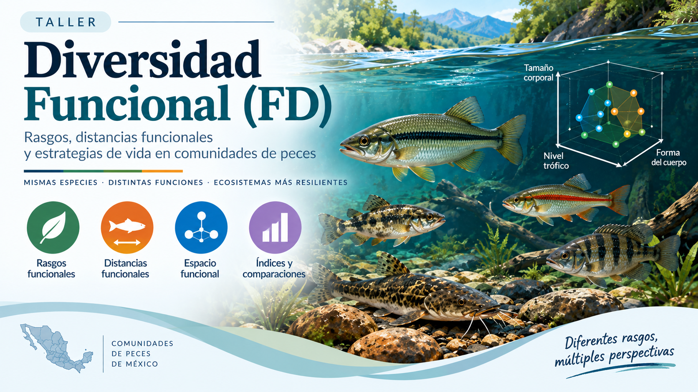
Taller 2. Diversidad funcional: bloques A1, A2, B1 y B2
Los datos de este y el resto de talleres con peces, son tomados del manuscrito de Ruiz-Campos et al. (2021) (enlace_manuscrito).
Materiales requeridos para el taller en clase
En los siguientes enlaces se podrán descargar archivos comprimidos de los dos talleres donde se pueden aplicar procedimientos de diversidad funcional - FD en RStudio, con un caso guiado de peces de México (📰 Taller2_Diversidad_Funcional) y el cuestionario de soporte (📰 Cuestionario_Diversidad_funcional).
Nota: una vez se descarguen los materiales, se requiere descomprimirlos antes de realizar cualquier procedimiento y seguir las orientaciones del docente para realizar los ejercicios requeridos.
Diapositivas en vivo - Slides.com

- 📰 Diapositivas del Taller2.1_Diversidad_Funcional_A1_A2
- 📰 Diapositivas del Taller2.2_Diversidad_Funcional_B1_B2
Para tener en cuenta
- Unidad III (Diversidad Funcional). El taller se realiza en cuatro bloques metodológicos: A1, A2, B1 y B2. Resultados de aprendizaje esperados (RA):
- RA1: Calcular e interpretar métricas de diversidad funcional - FD - con R.
- RA2: Diseñar flujos de trabajo reproducibles en R.
- Requisito: Haber terminado el Taller 1 (manipulación de materices de datos) y disponer de las hojas de cálculo
biol1,rasgos1yzonas. - Parte 1 del taler: Construcción de la distancia funcional y desarrollo del bloque A1 (Villéger et al., 2008), que incluye el complemento CWM (Lavorel et al., 2008), realizar el bloque A2 (Rao, 1982).
- Parte 2 del taler: Desarrollo del bloque de B1 (Chao et al., 2021) de B2 (Chao et al., 2023), comparación de enfoques (A1, A2, B1 y B2) e integración de resultados.
- Parte 3 del taler: Desarrollo de un cuestionario de refuerzo sobre FD, que debe ser entregado y socializado.
Mapa conceptual del taller
Nota
La multidimensionalidad responde a qué dimensión de la biodiversidad se estudia: diversidad taxonómica (TD), funcional (FD) o filogenética (PD).
La multiescalaridad responde a a qué escala se descompone la diversidad: alfa (α), beta (β) y gamma (γ).
Los bloques A1 + A2 + B1 + B2 representan enfoques metodológicos complementarios para estudiar estas dimensiones y escalas:
- A1 — Estimadores clásicos de FD: FRic, FEve, FDiv, FDis y RaoQ con
dbFD(). - A2 — Entropía cuadrática de Rao: partición de FD en α, β y γ, con componentes aditivos y multiplicativos.
- B1 — Números efectivos de Hill para FD alfa:
iNEXT3D(), rarefacción/extrapolación y estandarización por cobertura. - B2 — Números efectivos de Hill para FD beta:
iNEXTbeta3D(), comparación entre comunidades bajo cobertura común.
ImportanteCriterio de uso de los resultados
A1 y A2 describen la estructura funcional con los datos observados — ideales con múltiples localidades, por su facilidad de mapeo. B1 y B2 incorporan rarefacción/extrapolación y cobertura muestral para comparaciones más defendibles cuando el esfuerzo de muestreo difiere entre unidades — ideales para comparar grupos (ej.: zonas, periodos) o pocas muestras.
Cargar librerías, datos y matrices
Se reconstruye el objeto de trabajo a partir del archivo datos.xlsx. La transformación de abundancias convierte los valores vacíos o espacios en blanco en cero para evitar que una celda no numérica se propague como NA durante los cálculos.
1. Cargar librerías.
Código
library(tidyverse) # Ecosistema tidyverse (dplyr, tidyr, ggplot2, purrr, ...)
library(readxl) # Habilita la lectura de archivos .xlsx
library(kableExtra) # Habilita el formato enriquecido de tablas
library(FD) # Aporta gowdis() y dbFD()
library(iNEXT.3D) # Aporta iNEXT3D() y estimate3D(): FD alfa
library(iNEXT.beta3D) # Aporta iNEXTbeta3D(): FD beta por números de Hill
ruta_datos <- "datos.xlsx" # Define la ruta relativa del archivo de datos2. Cargar datos de taxonones
Código
tax <- read_xlsx(ruta_datos, sheet = "tax") # Lee la hoja de abundancias por sitio
biol1 <-
tax %>%
dplyr::select(-Sites, -Sites1) %>% # Retira las columnas de identificación (no son especies)
mutate(
across(
everything(),
~ as.numeric(trimws(as.character(.))) # Fuerza cada columna a numérica, quitando espacios ocultos
)
) %>%
mutate(
across(everything(), ~
replace(.x, is.na(.x), 0)) # Reemplaza por 0 cualquier celda que no se pudo convertir
) %>%
as.data.frame() # Convierte a data.frame clásico (formato que exige FD/Rao)
rownames(biol1) <- tax$Sites # Asigna el código de sitio como nombre de fila
# Impresión de la tabla resumida
head(biol1, 8) %>%
dplyr::select(1:8) %>%
kbl(booktabs = F, longtable = FALSE, digits = 2) %>%
kable_classic(full_width = F, html_font = "Cambria") %>%
kableExtra::row_spec(0, bold = TRUE)| Hypanus sabinus | Elops saurus | Megalops atlanticus | Albula vulpes | Anguilla rostrata | Myrophis punctatus | Anchoa mitchilli | Anchoa hepsetus | |
|---|---|---|---|---|---|---|---|---|
| 11M | 0 | 0 | 0 | 0 | 0 | 0 | 0 | 0 |
| 12M | 0 | 0 | 0 | 0 | 0 | 0 | 0 | 0 |
| 13M | 0 | 0 | 0 | 0 | 0 | 0 | 0 | 0 |
| 14M | 0 | 0 | 0 | 0 | 0 | 0 | 0 | 0 |
| 17M | 0 | 0 | 0 | 0 | 0 | 0 | 0 | 0 |
| 18M | 0 | 0 | 0 | 0 | 0 | 0 | 0 | 0 |
| 1M | 0 | 0 | 0 | 0 | 0 | 0 | 0 | 0 |
| 20M | 0 | 0 | 0 | 0 | 0 | 0 | 0 | 0 |
Código
zonas <-
tax %>%
dplyr::select(Sites, Zona = Sites1) # Conserva el sitio y su zona de gradiente (M/P/RM)3. Cargar datos de rasgoss
Código
rasgos_raw <- read_xlsx(ruta_datos, sheet = "rasgos") # Lee la hoja de rasgos funcionales
rasgos1 <-
rasgos_raw %>%
column_to_rownames("LatinName") %>% # Usa el nombre científico como identificador de fila
dplyr::select(
TrophicLevel, BodyLength, BodyLengthMax, ShapeFactor, # Rasgos cuantitativos
omnivory, detritivory, herbivory, invertivory, # Rasgos binarios de dieta (parte 1)
piscivory, carnivory # Rasgos binarios de dieta (parte 2)
)
rasgos1 <- rasgos1[colnames(biol1), ] # Reordena las especies para que coincidan con biol1
stopifnot(identical(colnames(biol1),
rownames(rasgos1))) # Verifica la alineación especie a especie
# Impresión de la tabla resumida
head(rasgos1, 8) %>%
dplyr::select(1:7) %>%
kbl(booktabs = F, longtable = FALSE, digits = 2) %>%
kable_classic(full_width = F, html_font = "Cambria") %>%
kableExtra::row_spec(0, bold = TRUE)| TrophicLevel | BodyLength | BodyLengthMax | ShapeFactor | omnivory | detritivory | herbivory | |
|---|---|---|---|---|---|---|---|
| Hypanus sabinus | 3.3 | 227.45 | 431.76 | 5.73 | 0 | 0 | 0 |
| Elops saurus | 3.8 | 227.45 | 431.76 | 5.73 | 0 | 0 | 0 |
| Megalops atlanticus | 4.4 | 227.45 | 431.76 | 5.73 | 0 | 0 | 0 |
| Albula vulpes | 3.2 | 227.45 | 431.76 | 5.73 | 0 | 0 | 0 |
| Anguilla rostrata | 3.4 | 420.00 | 840.00 | 16.67 | 0 | 0 | 0 |
| Myrophis punctatus | 3.3 | 227.45 | 431.76 | 5.73 | 0 | 0 | 0 |
| Anchoa mitchilli | 2.6 | 227.45 | 431.76 | 5.73 | 1 | 0 | 0 |
| Anchoa hepsetus | 2.6 | 227.45 | 431.76 | 5.73 | 1 | 0 | 0 |
Código
dim(biol1) # Confirma las dimensiones (42 sitios x 87 especies)[1] 42 87Código
table(zonas$Zona) # Confirma el número de sitios por zona
M P RM
24 16 2 4. Cargar datos de coordenadas.
Código
# coord no se usa en A2/B1/B2, pero sí en los mapas espaciales de A1
# (mismo procedimiento del Taller 1: se corrige el espacio de no separación
# oculto en los códigos de sitio antes de alinear con biol1)
coord_raw <- read_xlsx(ruta_datos, sheet = "coord") %>%
mutate(Code = str_remove_all(Code, "[^A-Za-z0-9]")) # Elimina caracteres ocultos del código de sitio
coord <- coord_raw %>%
dplyr::select(Code, Longitude, Latitude) %>% # Conserva solo el código y las coordenadas
column_to_rownames("Code") # Usa el código de sitio como nombre de fila
coord <- coord[rownames(biol1), ] # Reordena para que coincida con el orden de biol1
# Impresión de la tabla resumida
head(coord, 8) %>%
kbl(booktabs = F, longtable = FALSE, digits = 2) %>%
kable_classic(full_width = F, html_font = "Cambria") %>%
kableExtra::row_spec(0, bold = TRUE)| Longitude | Latitude | |
|---|---|---|
| 11M | -99.50 | 24.48 |
| 12M | -99.68 | 24.53 |
| 13M | -99.38 | 24.51 |
| 14M | -99.27 | 24.41 |
| 17M | -99.46 | 24.13 |
| 18M | -99.57 | 24.35 |
| 1M | -99.18 | 23.59 |
| 20M | -99.18 | 24.09 |
Código
stopifnot(identical(rownames(coord), rownames(biol1))) # Verifica la alineación sitio a sitio
TipPor qué el esfuerzo de muestreo importa
M reúne 24 sitios y 13.166 individuos; P, 16 sitios y 5.151; RM, solo 2 sitios y 414 — y aun así RM tiene 53 especies frente a 30 en M y en P. Esta asimetría demuestra que: calcular diversidad funcional con los datos observados no equivale a comparar comunidades con igual completitud muestral.
Distancia funcional: Gower

Las seis variables binarias de dieta se consideran asimétricas, porque compartir la ausencia de un hábito alimenticio no debe contribuir como una similitud funcional positiva. Los valores más cercanos a cero, indican similitud de rasgos entre las parejas de especies comparadas.
Código
vars_bin <- c(
"omnivory", "detritivory", "herbivory", # Define los rasgos binarios de dieta...
"invertivory", "piscivory", "carnivory" # ...que se van a tratar como asimétricos
)
asym_idx <- match(vars_bin, colnames(rasgos1)) # Ubica la posición de esos rasgos dentro de rasgos1
rasgos.d <- gowdis(
rasgos1, # Matriz de rasgos (especies x rasgos)
asym.bin = asym_idx # Las columnas binarias se tratan como asimétricas
)
round(as.matrix(rasgos.d)[1:4, 1:4],3) # Fragmento 4x4 de la matriz de distancias Hypanus sabinus Elops saurus Megalops atlanticus
Hypanus sabinus 0.000 0.367 0.407
Elops saurus 0.367 0.000 0.048
Megalops atlanticus 0.407 0.048 0.000
Albula vulpes 0.008 0.373 0.413
Albula vulpes
Hypanus sabinus 0.008
Elops saurus 0.373
Megalops atlanticus 0.413
Albula vulpes 0.000
AdvertenciaLimitación de los rasgos tabulados
Tres de los diez rasgos de la distancia funcional rasgos.d, como BodyLength, BodyLengthMax y ShapeFactor, presentan valores hipottéticos, que están repetidos en varias especies, lo cual se puede evidenciar en este chequeo básico para el caso de BodyLength
Código
rasgos_raw1 <-
rasgos_raw %>%
count(BodyLength, sort = TRUE) %>% # Cuenta cuántas especies comparten cada valor de BodyLength
slice(1) # Conserva solo el valor más repetido
# Impresión de la tabla resumida
rasgos_raw1 %>%
kbl(booktabs = F, longtable = FALSE, digits = 2) %>%
kable_classic(full_width = F, html_font = "Cambria") %>%
kableExtra::row_spec(0, bold = TRUE)| BodyLength | n |
|---|---|
| 227.45 | 73 |
Un mismo valor de BodyLength se repite en el 84 % de las especies (73/84 especies con el mismo valor), indicando que es un valor de relleno, no una coincidencia biológica. Lo mismo ocurre en BodyLengthMax y ShapeFactor. Por lo que para este caso, la distancia de Gower descansa casi por completo en TrophicLevel y los seis rasgos binarios de dieta. Lo anterior se hizo con fines didácticos del presente ejercicio y porque puede ocurrir en varios estudios funcionales del Caribe colomiano. Una opción que se podría probar es excluir estos rasgos con valores repetidos, pero no es objeto del presente ejercicio.
Dendrograma funcional de las especies
Antes de resumir la FD en índices numéricos, conviene ver el espacio funcional que se está construyendo. El siguiente dendrograma agrupa las 87 especies según la matriz de distancias funcionales rasgos.d, la cual alimentará a los bloques A1, A2, B1 y B2.
Código
library(factoextra) # Aporta fviz_dend(): graficado del dendrograma
library(RColorBrewer) # Aporta las paletas de color usadas en el dendrograma
hc_fd <- hclust(rasgos.d, method = "ward.D2") # Agrupa las especies por distancia funcional (Ward.D2)
# Los 87 nombres científicos completos se solapan en el eje x; se abrevian
# con el mismo criterio que usa el manuscrito para biol1 (minlength = 4)
hc_fd$labels <- abbreviate(hc_fd$labels, minlength = 4) # Acorta cada nombre a ~4 caracteres
k_grupos <- 3 # Define el número de grupos de referencia a colorear
fig1 <-
fviz_dend(
hc_fd, # Objeto de agrupamiento jerárquico (con etiquetas ya abreviadas)
k = k_grupos, # Número de grupos a resaltar con color
cex = 0.6, # Tamaño del texto de las etiquetas
lwd = 0.6, # Grosor de las líneas del dendrograma
k_colors = brewer.pal(max(k_grupos, 3), "Dark2"), # Paleta de color para los grupos
rect = FALSE, # Omite los rectángulos alrededor de los grupos
main = "Dendrograma funcional de especies", # Título del gráfico
ylab = "Distancia funcional (Ward.D2)", # Etiqueta del eje y
xlab = "" # Sin etiqueta en el eje x (nombres de especie)
) +
theme_classic(base_size = 12) + # Aplica un tema limpio, sin fondo gris
theme(
axis.text.x = element_text(size = 7, angle = 90, vjust = 0.5, hjust = 1), # Rota las etiquetas de especie
plot.title = element_text(face = "bold", hjust = 0.5) # Centra y resalta el título
)
print(fig1)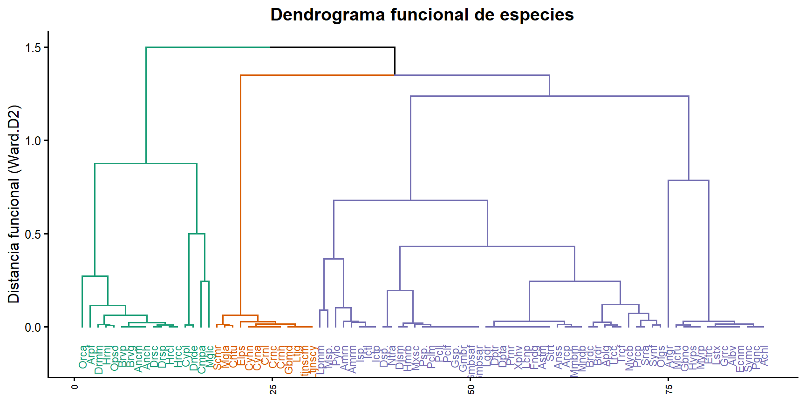
TipCómo leer este dendrograma
Las uniones más bajas (distancia funcional cercana de 0) son especies casi idénticas en sus rasgos; las uniones altas separan estrategias funcionales muy distintas. Los tres colores son un agrupamiento de referencia (Ward.D2, k = 3) — no corresponden a las zonas M/P/RM, sino a estrategias funcionales que después se van a encontrar mezcladas o concentradas en cada zona.
Agrupamiento no jerárquico (k-medias en el espacio PCoA)
Con 87 especies, un dendrograma lineal sigue siendo apretado incluso con nombres abreviados, por lo que a continuación se proyecta un dendograma no jerárquic, que es más apropiado para este tipo de casos. En esta Figura 2 se proyecta a las especies en un plano cartesiano de dos ejes del PCoA y se agrupa a las especies en tres k-medias.
Código
library(ape) # Aporta pcoa(): análisis de coordenadas principales
library(ggrepel) # Evita la superposición de etiquetas de texto
# PCoA sobre la distancia de Gower — se reutiliza en A1 (espacio funcional por zona)
pcoa_fd <- ape::pcoa(as.matrix(rasgos.d), correction = "cailliez") # PCoA con corrección de euclidianidad
var1 <- round(100 * pcoa_fd$values$Rel_corr_eig[1], 1) # % de varianza explicado por el eje 1
var2 <- round(100 * pcoa_fd$values$Rel_corr_eig[2], 1) # % de varianza explicado por el eje 2
ejes <- as.data.frame(pcoa_fd$vectors[, 1:2]) # coordenadas de los dos primeros ejes
colnames(ejes) <- c("PCoA1", "PCoA2") # Nombra las columnas de coordenadas
ejes$Especie <- rownames(ejes) # Recupera el nombre de especie como columna
ejes$Abrev <- abbreviate(ejes$Especie, minlength = 4) # Genera la misma abreviatura usada en el dendrograma
set.seed(2026) # Fija la semilla para que el agrupamiento k-medias sea reproducible
km_fd <- kmeans(scale(ejes[, c("PCoA1", "PCoA2")]),
centers = k_grupos, nstart = 50) # Agrupa en 3 clústeres
ejes$cluster <- factor(km_fd$cluster) # Guarda la asignación de clúster de cada especie
fig2 <-
ggplot(ejes, aes(PCoA1, PCoA2,
color = cluster, label = Abrev)) +
stat_ellipse(type = "norm", level = 0.68,
linewidth = 0.7, alpha = 0.12,
show.legend = FALSE) + # Dibuja la elipse de cada clúster
geom_point(size = 2.1) + # Dibuja cada especie como un punto
ggrepel::geom_text_repel(size = 3,
max.overlaps = 100,
show.legend = FALSE) + # Añade la etiqueta abreviada sin solaparse
scale_color_brewer(palette = "Dark2") +
labs(
title = "Agrupamiento k-medias en el espacio funcional (PCoA)",
x = paste0("PCoA1 (", var1, "%)"),
y = paste0("PCoA2 (", var2, "%)"),
color = "Clúster"
) +
theme_classic(base_size = 13) +
theme(
legend.position = "bottom",
plot.title = element_text(face = "bold", hjust = 0.5)
)
print(fig2)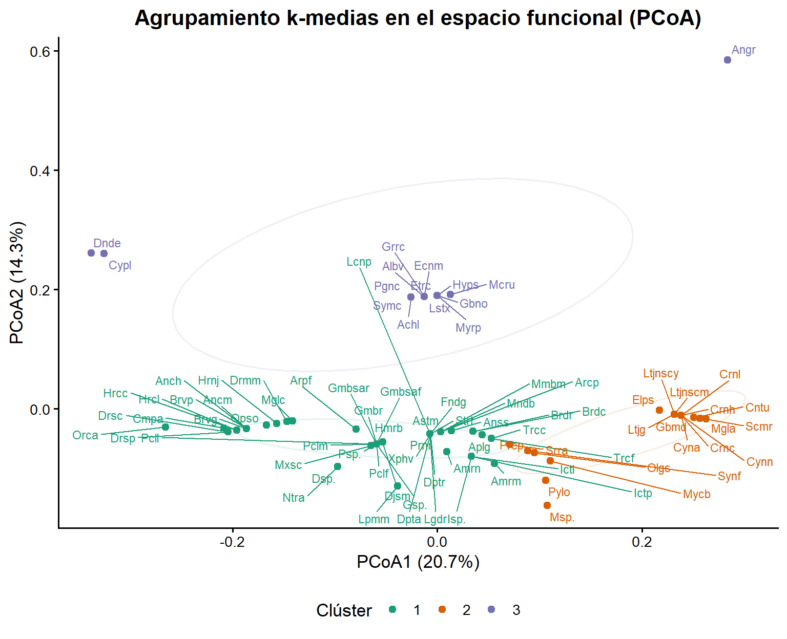
TipPor qué esta figura complementa al dendrograma
Dendrograma y k-medias parten de la misma matriz de distancias, pero son algoritmos distintos (jerárquico vs. particional) y no tienen por qué asignar las mismas especies a cada grupo. Cuando ambos coinciden en los mismos tres grupos, es señal de que la estructura funcional es robusta, no un artefacto del método.
A1. Estimadores clásicos de diversidad funcional
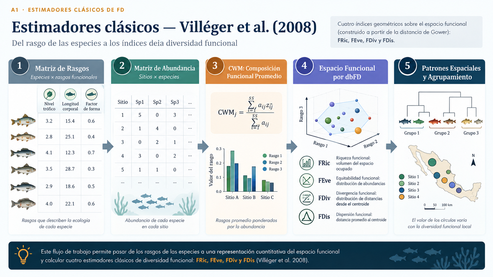
El enfoque A1 describe la estructura funcional de cada unidad de muestreo mediante índices clásicos, descritos por Villéger et al. (2008). Se utiliza la matriz de distancia de Gower ya construida para mantener el mismo espacio funcional durante todo el taller.
Estructura funcional con dbFD()
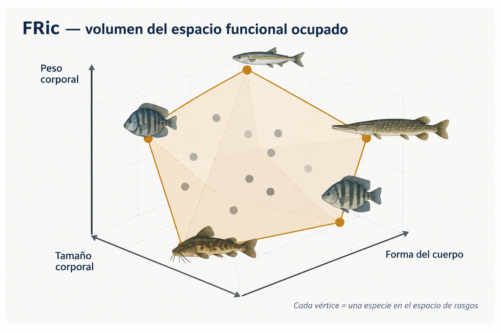
El comando dbFD() implementa, entre otros, los índices FRic, FEve y FDiv además de FDis y RaoQ (Villéger et al., 2008).
Ejecutar dbFD()
Código
fd_a1 <-
dbFD(
x = rasgos.d, # Matriz de distancias funcionales (especie x especie)
a = biol1, # Matriz de abundancias (sitios x especies)
w.abun = TRUE, # Pondera los índices por abundancia relativa
stand.FRic = TRUE, # Estandariza FRic por el número de especies (mismo criterio del Capítulo 8)
calc.FRic = TRUE, # Calcula la riqueza funcional (FRic)
calc.FDiv = TRUE, # Calcula la divergencia funcional (FDiv)
calc.CWM = FALSE, # El CWM se calculará aparte, en "Community Weighted Means"
corr = "cailliez", # Corrección de Cailliez para garantizar euclidianidad
messages = FALSE # Suprime los mensajes de progreso de la función
)
NotaPor qué linealizar con
corr = "cailliez" y no "sqrt"
Ambas correcciones vuelven euclidiana la distancia de Gower, pero no producen la misma escala en FDis y RaoQ. Aquí se usa "cailliez".
"sqrt"aplica la raíz cuadrada a cada distancia. Es simple y no depende del conjunto de especies, pero no garantiza euclidianidad en todos los casos."cailliez"suma a todas las distancias entre especies distintas la constante mínima que asegura euclidianidad (Cailliez, 1983). Siempre funciona y conserva las diferencias entre distancias, pero el valor de la constante depende de toda la matriz y separa artificialmente a especies con rasgos idénticos.
En este taller se usa "cailliez". Ninguna es “la correcta”: lo importante es declarar cuál usar.
Índices de diversidad funcional por sitio
Código
fd_a1_sitios <- tibble(
Sitio = rownames(biol1), # Extrae el código de cada sitio
FRic = as.numeric(fd_a1$FRic), # Extrae la riqueza funcional por sitio
FEve = as.numeric(fd_a1$FEve), # Extrae la equidad funcional por sitio
FDiv = as.numeric(fd_a1$FDiv), # Extrae la divergencia funcional por sitio
FDis = as.numeric(fd_a1$FDis), # Extrae la dispersión funcional por sitio
RaoQ = as.numeric(fd_a1$RaoQ) # Extrae la entropía cuadrática de Rao por sitio
) %>%
left_join(zonas, by = c("Sitio" = "Sites")) # Añade la zona correspondiente a cada sitio
fd_a1_sitios %>%
head(10) %>% # Conserva solo los primeros 10 sitios para la vista previa
kbl(
booktabs = TRUE, digits = 3, align = "c",
caption = "Índices clásicos de diversidad funcional — primeros 10 sitios"
) %>%
kable_styling(
bootstrap_options = c("striped", "hover", "condensed"), # Aplica franjas, resalte al pasar el mouse y filas compactas
full_width = FALSE,
position = "center"
) %>%
row_spec(0, bold = TRUE, color = "white", background = "#2E4057") # Resalta el encabezado| Sitio | FRic | FEve | FDiv | FDis | RaoQ | Zona |
|---|---|---|---|---|---|---|
| 11M | 0.021 | 0.864 | 0.520 | 0.109 | 0.018 | M |
| 12M | 0.003 | 0.376 | 0.799 | 0.066 | 0.005 | M |
| 13M | 0.031 | 0.690 | 0.711 | 0.110 | 0.017 | M |
| 14M | 0.021 | 0.555 | 0.405 | 0.071 | 0.013 | M |
| 17M | 0.257 | 0.381 | 0.634 | 0.127 | 0.031 | M |
| 18M | 0.025 | 0.464 | 0.260 | 0.068 | 0.012 | M |
| 1M | NA | NA | NA | 0.000 | 0.000 | M |
| 20M | 0.067 | 0.398 | 0.524 | 0.089 | 0.013 | M |
| 25M | NA | NA | NA | 0.000 | 0.000 | M |
| 26M | 0.024 | 0.294 | 0.452 | 0.060 | 0.007 | M |
Índices de diversidad funcional por zona
Código
fd_a1_zona <- fd_a1_sitios %>%
group_by(Zona) %>% # Agrupa los sitios por zona
summarise(
n = n(), # Cuenta el número de sitios por zona
across(
c(FRic, FEve, FDiv, FDis, RaoQ),
~ mean(.x, na.rm = TRUE) # Promedia cada índice, ignorando los NA
),
.groups = "drop" # Retira la agrupación del resultado final
)
fd_a1_zona %>%
kbl(
booktabs = TRUE, digits = 3, align = "c",
caption = "Promedio de los índices clásicos de FD por zona"
) %>%
kable_styling(
bootstrap_options = c("striped", "hover", "condensed"),
full_width = FALSE, position = "center"
) %>%
row_spec(0, bold = TRUE, color = "white", background = "#2E4057") %>%
column_spec(1, bold = TRUE) # Resalta la columna de zona| Zona | n | FRic | FEve | FDiv | FDis | RaoQ |
|---|---|---|---|---|---|---|
| M | 24 | 0.031 | 0.493 | 0.500 | 0.062 | 0.009 |
| P | 16 | 0.049 | 0.499 | 0.652 | 0.121 | 0.024 |
| RM | 2 | 0.633 | 0.486 | 0.738 | 0.177 | 0.037 |
AdvertenciaValores
NA en algunos índices
Algunos sitios pueden presentar NA para FRic, FEve o FDiv. Esto no debe interpretarse automáticamente como un valor de diversidad igual a cero ni reemplazarse por cero. Estos índices requieren una representación funcional que puede no ser estimable para determinadas composiciones locales de especies. Además, el resumen por zona es descriptivo y debe interpretarse con cautela porque el número de sitios es desigual, especialmente en RM. El ajuste de esta disimilitud de muestras se realizará en los bloques B1 y B2.
Código
fd_a1_sitios %>%
pivot_longer(
cols = c(FRic, FEve, FDiv, FDis, RaoQ), # Selecciona los cinco índices a graficar
names_to = "Indice", # Crea una columna con el nombre del índice
values_to = "Valor" # Crea una columna con el valor correspondiente
) %>%
ggplot(aes(x = Zona, y = Valor)) +
geom_boxplot(outlier.shape = NA) + # Dibuja la distribución por zona, sin marcar outliers aparte
geom_jitter(width = 0.08, alpha = 0.6) + # Superpone cada sitio como un punto disperso
facet_wrap(~ Indice, scales = "free_y") + # Separa un panel por índice, con escala propia
labs(
x = "Zona",
y = "Valor",
title = "Estructura funcional a escala de sitio"
)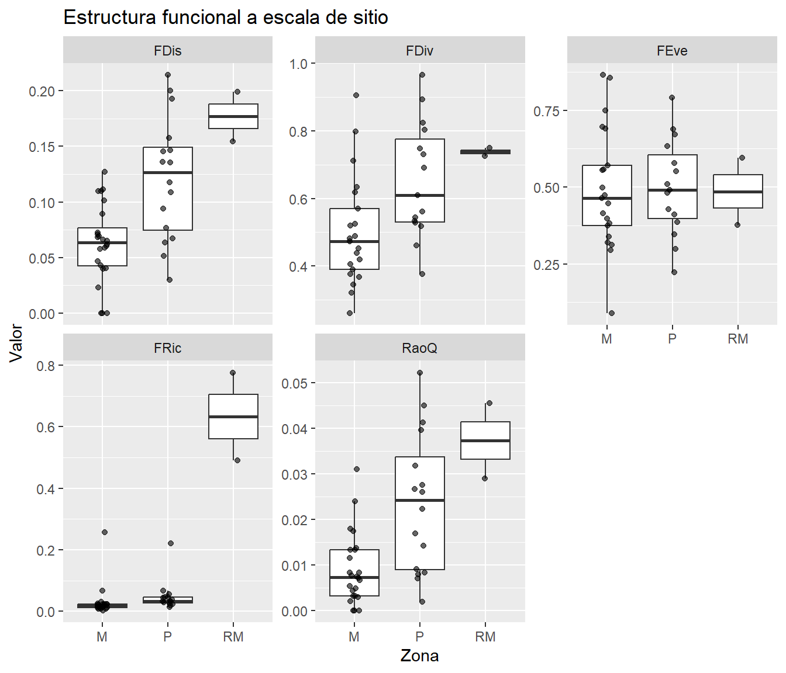
ImportanteInterpretación de los índices del bloque A1
- FRic describe el espacio funcional ocupado por la comunidad.
- FEve describe cómo se distribuye la abundancia dentro del espacio funcional.
- FDiv describe la posición relativa de las abundancias respecto al centro del espacio funcional.
- FDis mide la dispersión funcional respecto al centroide de la comunidad.
- RaoQ incorpora simultáneamente abundancia relativa y distancia funcional entre especies.
Estos índices no son intercambiables, los ensamblajes pueden presentar valores altos de un índice y bajos de otro porque responden a propiedades diferentes de la estructura funcional.
Calidad del espacio funcional
Código
fd_a1$qual.FRic # Extrae la calidad de representación del espacio reducido usado por FRic/FDiv[1] 0.3694148
AdvertenciaQué significa este número
qual.FRic va de 0 a 1 y mide cuánta de la distancia funcional original (rasgos.d) sobrevive en el espacio reducido que usan FRic y FDiv. Un valor de ~0.37, como el de este conjunto de datos, es moderado-bajo: FRic y FDiv siguen siendo útiles para comparar sitios entre sí, pero no deben citarse como una medida absoluta y precisa del volumen funcional — se recomienda reportarlos siempre junto con este valor de calidad.
Mapa espacial de los índices funcionales por sitio
Para realizar este mapeo se requiere contar con varios sitios de muestreo y tener información de sus coordenadas o ubicación. Para este caso es interesante, porque permite evaluar la fluctuación desde la la cabecera del río (circulos a la izquierda de las figuras), hasta la desembocadura (circulos a la derecha - Figura 1.2). Se reutiliza aquí con coord, el objeto que ya se construyó en el Taller 1.
Código
# Reescala cualquier índice a un rango de tamaños de círculo fijo (0.4 a 3.2),
# sin importar la magnitud original del índice — reemplaza a los multiplicadores fijos
escalar_cex <- function(x, min_cex = 0.4, max_cex = 3.2) {
rango <- range(x, na.rm = TRUE) # Calcula el mínimo y máximo del índice (ignora NA)
if (diff(rango) == 0) return(rep(mean(c(min_cex, max_cex)), length(x))) # Evita dividir por cero si el índice es constante
min_cex + (x - rango[1]) / diff(rango) * (max_cex - min_cex) # Reescala linealmente al rango de tamaños deseado
}
par(
mfrow = c(3, 2), # Organiza los paneles en una cuadrícula de 3 filas x 2 columnas
mar = c(4.5, 4.5, 3, 1), # Define los márgenes de cada panel
cex.axis = 0.8, cex.lab = 1.1, cex.main = 1 # Ajusta el tamaño de texto de ejes y título
)
plot(coord, asp = 1, pch = 21, col = "white", bg = "brown", # Dibuja un círculo por sitio
cex = escalar_cex(fd_a1$FRic), # Escala el tamaño del círculo según FRic (reescalado)
main = "(a) Riqueza funcional (FRic)",
xlab = "Longitud", ylab = "Latitud")
lines(coord, col = "light blue") # Conecta los sitios en su orden de fila (referencia visual del recorrido)
plot(coord, asp = 1, pch = 21, col = "white", bg = "brown",
cex = escalar_cex(fd_a1$FEve), # Escala el tamaño del círculo según FEve (reescalado)
main = "(b) Equidad funcional (FEve)",
xlab = "Longitud", ylab = "Latitud")
lines(coord, col = "light blue")
plot(coord, asp = 1, pch = 21, col = "white", bg = "brown",
cex = escalar_cex(fd_a1$FDiv), # Escala el tamaño del círculo según FDiv (reescalado)
main = "(c) Divergencia funcional (FDiv)",
xlab = "Longitud", ylab = "Latitud")
lines(coord, col = "light blue")
plot(coord, asp = 1, pch = 21, col = "white", bg = "brown",
cex = escalar_cex(fd_a1$FDis), # Escala el tamaño del círculo según FDis (reescalado)
main = "(d) Dispersión funcional (FDis)",
xlab = "Longitud", ylab = "Latitud")
lines(coord, col = "light blue")
plot(coord, asp = 1, pch = 21, col = "white", bg = "brown",
cex = escalar_cex(fd_a1$RaoQ), # Escala el tamaño del círculo según RaoQ (reescalado)
main = "(e) Entropía cuadrática de Rao (RaoQ)",
xlab = "Longitud", ylab = "Latitud")
lines(coord, col = "light blue")
plot.new() # Deja el sexto panel vacío (FGR no se calculó en esta corrida de dbFD())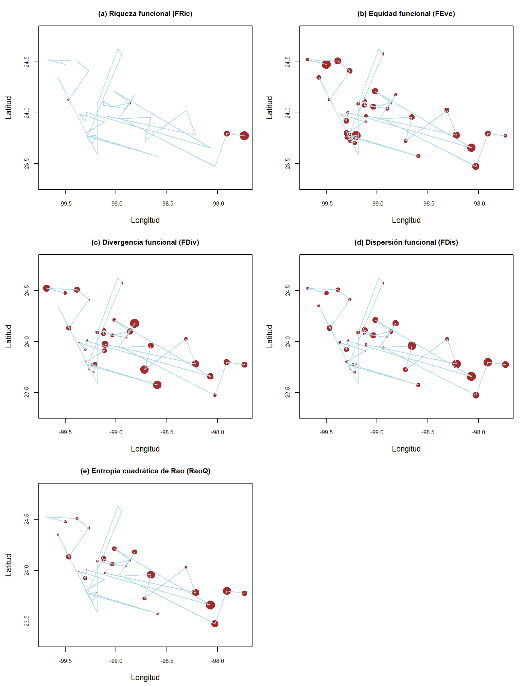
TipNota de transferencia
escalar_cex() funciona con cualquier índice y cualquier conjunto de datos porque depende del rango real de los valores, no de un número copiado. Al usar datos propios o al ejercicio del estudio de caso, solo es necesario revisar que min_cex/max_cex den círculos legibles.
Espacio funcional por zona (vs. por clúster)
Los índices de A1 resumen un espacio funcional multidimensional. Antes de seguir a A2, conviene verlo directamente: cada especie es un punto en el plano PCoA ya calculado (pcoa_fd), y la envolvente convexa de una zona sobre esos dos ejes es una representación visual simplificada de su espacio funcional — no el cálculo exacto que usa dbFD() internamente (ver advertencia abajo).
Código
# Presencia de cada especie por zona, a partir de biol1 + zonas
# (reutiliza pcoa_fd/ejes calculados en "Agrupamiento no jerárquico"; no se vuelve a correr pcoa())
presencia_zona <-
biol1 %>%
rownames_to_column("Sites") %>% # Recupera el código de sitio como columna
left_join(zonas, by = "Sites") %>% # Añade la zona correspondiente a cada sitio
dplyr::select(-Sites) %>% # Retira el código de sitio (ya no se necesita)
group_by(Zona) %>% # Agrupa por zona
summarise(across(everything(), sum),
.groups = "drop") %>% # Suma las abundancias dentro de cada zona
pivot_longer(-Zona,
names_to = "Especie",
values_to = "Abundancia") %>% # Pasa a formato largo
filter(Abundancia > 0) %>% # Conserva solo especies de cada zona
left_join(ejes, by = "Especie") # Añade las coordenadas PCoA
# Envolvente convexa por zona (se requiere un mínimo de 3 especies para formar un polígono)
hulls_zona <-
presencia_zona %>%
group_by(Zona) %>% # Agrupa por zona
filter(n() >= 3) %>% # Excluye zonas con < 3 especies (no forman polígono)
slice(chull(PCoA1, PCoA2)) # Conserva solo los puntos del borde convexo
# Impresión de la tabla con los datos
hulls_zona %>%
kbl(booktabs = F, longtable = FALSE, digits = 2) %>%
kable_classic(full_width = F, html_font = "Cambria") %>%
kableExtra::row_spec(0, bold = TRUE)| Zona | Especie | Abundancia | PCoA1 | PCoA2 | Abrev | cluster |
|---|---|---|---|---|---|---|
| M | Aplodinotus grunniens | 3 | 0.04 | -0.04 | Aplg | 1 |
| M | Micropterus spp. | 66 | 0.11 | -0.16 | Msp. | 2 |
| M | Lepomis macrochirus | 13 | -0.04 | -0.13 | Lpmm | 1 |
| M | Oreochromis aureus | 62 | -0.27 | -0.03 | Orca | 1 |
| M | Dionda episcopa | 4 | -0.34 | 0.26 | Dnde | 3 |
| P | Micropterus spp. | 382 | 0.11 | -0.16 | Msp. | 2 |
| P | Lepomis macrochirus | 81 | -0.04 | -0.13 | Lpmm | 1 |
| P | Oreochromis aureus | 130 | -0.27 | -0.03 | Orca | 1 |
| P | Cyprinella lutrensis | 1 | -0.33 | 0.26 | Cypl | 3 |
| P | Centropomus undecimalis | 12 | 0.25 | -0.01 | Cntu | 2 |
| RM | Scomberomorus regalis | 3 | 0.26 | -0.02 | Scmr | 2 |
| RM | Mycteroperca bonaci | 1 | 0.11 | -0.09 | Mycb | 2 |
| RM | Brevoortia gunteri | 9 | -0.19 | -0.03 | Brvg | 1 |
| RM | Pogonias cromis | 2 | -0.03 | 0.19 | Pgnc | 3 |
| RM | Anguilla rostrata | 1 | 0.28 | 0.59 | Angr | 3 |
AdvertenciaQué NO es este polígono
Este polígono usa solo los dos primeros ejes de la PCoA, mientras que dbFD() calcula FRic con tantos ejes como retenga internamente (puede ser más de dos). Es una ilustración del concepto, no un recálculo exacto de FRic. Si el orden visual no coincide con el orden numérico de FRic, la causa más probable es esta diferencia de dimensionalidad, no un error.
Espacio total vs. ocupado, por zona (estilo Tette-Pomárico et al., 2026)
Las siguientes figuras, ilustran lo que reporta Tette-Pomárico et al. (2026) (Gower + espacio reducido + envolvente convexa) con datos de zooplancton marino-costero de Santa Marta, separando el espacio funcional total del espacio realmente ocupado por cada grupo, con el tamaño de los puntos proporcional a su abundancia. Esa variante se reproduce aquí con las tres zonas en vez de disturbio × estación.
Código
# Envolvente convexa del espacio funcional TOTAL (las 87 especies, sin distinguir zona)
hull_total <- ejes %>%
slice(chull(PCoA1, PCoA2)) %>% # Conserva solo los puntos del borde convexo de todo el pool de especies
dplyr::select(PCoA1, PCoA2) # Conserva solo las coordenadas (se repite para cada panel)
# Repite el polígono total una vez por zona, para que aparezca de fondo en cada panel del facet_wrap
hull_total_rep <- purrr::map_dfr(
unique(presencia_zona$Zona),
~ hull_total %>% mutate(Zona = .x) # Añade la etiqueta de zona a cada copia del polígono total
)
# Dibujo del espacio funcional total, igual en los tres paneles
ggplot() +
geom_polygon(
data = hull_total_rep, aes(PCoA1, PCoA2),
fill = "grey88", color = "grey55", linewidth = 0.4
) +
# Dibujo del espacio realmente ocupado por esa zona
geom_polygon(
data = hulls_zona, aes(PCoA1, PCoA2, fill = Zona, color = Zona),
alpha = 0.35, linewidth = 0.7, show.legend = FALSE
) +
# Dibujo de cada especie; el tamaño refleja su abundancia
geom_point(
data = presencia_zona, aes(PCoA1, PCoA2, size = Abundancia, color = Zona),
alpha = 0.75, show.legend = c(size = TRUE, colour = FALSE)
) +
# Separar páneles por zona, con el mismo fondo gris en los tres
facet_wrap(~ Zona) +
scale_size_continuous(range = c(1, 9), name = "Abundancia") +
scale_color_brewer(palette = "Set2") +
scale_fill_brewer(palette = "Set2") +
labs(
title = "Espacio funcional total vs. ocupado, por zona",
x = paste0("PCoA1 (", var1, "%)"),
y = paste0("PCoA2 (", var2, "%)")
) +
theme_bw(base_size = 12) +
theme(
legend.position = "bottom",
plot.title = element_text(face = "bold", hjust = 0.5),
strip.background = element_rect(fill = "grey25"),
strip.text = element_text(color = "white", face = "bold")
)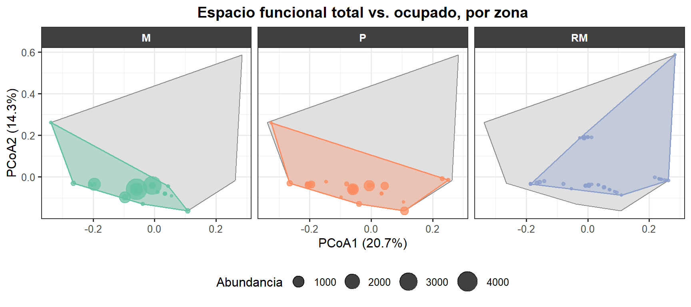
ImportanteCómo leer estos paneles
El gris de fondo es el techo funcional máximo del conjunto de datos; cuánto de ese gris se cubre de color en cada panel indica qué fracción del espacio disponible ocupa esa zona. El tamaño de los circulos (abundancia) añade una tercera lectura: una zona puede ocupar poco espacio con especies muy abundantes, o mucho espacio con especies raras.
Un espacio más grande no implica “más” especies, sino especies más dispersas en el espacio de rasgos. Si RM se ve grande con solo 2 sitios, es la misma advertencia que se confirma numéricamente en B1/B2: puede parecer más diversa porque sus pocas muestras capturaron especies muy distintas entre sí.
Patrón encontrado: el espacio de M queda anidado dentro del de P, mientras RM ocupa una región que ninguna otra zona alcanza. Bajo el marco de Boersma et al. (2016), esto es compatible con recambio funcional (el centroide de RM cae fuera del espacio de M) y divergencia funcional (rangos de espacio claramente distintos). Mouillot et al. (2013), describen este solapamiento parcial entre superficies convexas como la forma más directa de visualizar erosión o expansión de riqueza funcional entre ensamblajes: aquí, el bajo solapamiento M–RM sugiere que la desembocadura aporta estrategias funcionales propias, no solo un subconjunto de M, hipótesis que debe leerse junto con la advertencia de esfuerzo de muestreo (sección B1/B2). Recordar que esta lectura es sobre el espacio proyectado en dos ejes, no el FRic multidimensional exacto de dbFD().
Rasgo dominante en cada zona: Community Weighted Means (CWM)
Los índices anteriores describen cuánta diversidad funcional hay en cada sitio. El CWM responde una pregunta distinta: dado un rasgo, ¿cuál es su valor promedio en la comunidad, ponderado por la abundancia de cada especie? No es una medida de diversidad — es una medida de composición funcional dominante (Lavorel et al., 2008).
\[\text{CWM}_{rasgo} = \sum_{i=1}^{S} p_i \cdot rasgo_i\]
donde \(p_i\) es la abundancia relativa de la especie \(i\) en el sitio.
Código
cwm_sitio <-
functcomp(
x = rasgos1, # Tabla de rasgos originales por especie (NO la matriz de distancias rasgos.d)
a = as.matrix(biol1), # Matriz de abundancias (sitios x especies)
CWM.type = "all" # Incluye el promedio de los rasgos cuantitativos y binarios
)
colnames(cwm_sitio) # Nombres de las columnas de los rasgos [1] "TrophicLevel" "BodyLength" "BodyLengthMax" "ShapeFactor"
[5] "omnivory_0" "omnivory_1" "detritivory_0" "detritivory_1"
[9] "herbivory_0" "herbivory_1" "invertivory_0" "invertivory_1"
[13] "piscivory_0" "piscivory_1" "carnivory_0" "carnivory_1"
AdvertenciaPor qué las variables binarias presentan dos nombres
Con CWM.type = "all", functcomp() trata cada rasgo binario como dos clases (0/1) y devuelve la abundancia relativa de cada una por separado — por eso, en variables como piscivory se divide en piscivory_0 y piscivory_1. No es un error: es el comportamiento por defecto. La columna ..._1 es la que interesa.
La (tabla-cwm-zona?) muestra que el gradiente M → P → RM no solo desplaza el nivel trófico promedio hacia arriba, sino que cambia qué estrategia trófica lo sostiene: - en la zona M domina un ensamblaje casi sin depredadores especializados (piscivory e invertivory en 0, carnivory en 0, con apenas un 13% de omnivoría), - mientras que en la zona RM la piscivoría (0.15) y sobre todo la invertivoría (0.25) ganan peso de forma simultánea, y la omnivoría crece hasta 0.25 — es decir, el nivel trófico más alto de RM (visible en la Figura 1.4) no se explica por una sola estrategia dominante, sino por el avance conjunto de dos o tres hábitos alimenticios distintos a la vez que la herbivoría prácticamente desaparece. - La zona P queda en una posición intermedia y mixta: es la única con herbivoría presente (0.04) y con una omnivoría ya apreciable (0.19), lo que sugiere un ensamblaje trófico más heterogéneo que las otras dos. - Se resalta que si bien carnivory, da 0 en las tres zonas, aunque Anguilla rostrata con un individuo en RM presenta esa clasificación trófica. El CWM no borra ese rol rófico por ausencia del rasgo en el pool de especies, sino porque su abundancia relativa es tan baja frente al resto de RM que, al redondear a dos decimales, la proporción ponderada queda en 0,00.
Código
cwm_zona <-
cwm_sitio %>%
as_tibble() %>%
mutate(Sitio = rownames(cwm_sitio)) %>% # Recupera el código de sitio (functcomp() lo trae como nombre de fila)
left_join(zonas,
by = c("Sitio" = "Sites")) %>% # Añade la zona correspondiente a cada sitio
group_by(Zona) %>%
summarise(
across(where(is.numeric),
~ mean(.x, na.rm = TRUE)), # Promedia cada CWM de sitio dentro de la zona
.groups = "drop"
)
cwm_zona %>%
dplyr::select(
Zona, TrophicLevel, BodyLength,
piscivory = piscivory_1, # Proporción de abundancia con hábito piscívoro
carnivory = carnivory_1, # Proporción de abundancia con hábito carnívoro
omnivory = omnivory_1, # Proporción de abundancia con hábito omnívoro
invertivory = invertivory_1, # Proporción de abundancia con hábito invertívoro
herbivory = herbivory_1 # Proporción de abundancia con hábito herbívoro
) %>%
kbl(
booktabs = TRUE, digits = 2, align = "c",
caption = "Media Ponderada de la Comunidad (CWM) de algunos rasgos, por zona"
) %>%
kable_styling(
bootstrap_options = c("striped", "hover", "condensed"),
full_width = FALSE,
position = "center"
) %>%
row_spec(0, bold = TRUE,
color = "white",
background = "#2E4057") %>%
column_spec(1, bold = TRUE)| Zona | TrophicLevel | BodyLength | piscivory | carnivory | omnivory | invertivory | herbivory |
|---|---|---|---|---|---|---|---|
| M | 2.64 | 217.09 | 0.00 | 0 | 0.13 | 0.00 | 0.00 |
| P | 2.81 | 212.07 | 0.06 | 0 | 0.19 | 0.00 | 0.04 |
| RM | 3.25 | 227.75 | 0.15 | 0 | 0.25 | 0.25 | 0.00 |
Código
ggplot(cwm_zona, aes(x = Zona, y = TrophicLevel, fill = Zona)) +
geom_col(width = 0.55, show.legend = FALSE) + # Una barra por zona
scale_fill_brewer(palette = "Set2") +
labs(
title = "CWM de nivel trófico por zona",
x = "Zona",
y = "Nivel trófico promedio x abundancia"
) +
theme_classic(base_size = 13) +
theme(plot.title = element_text(face = "bold", hjust = 0.5))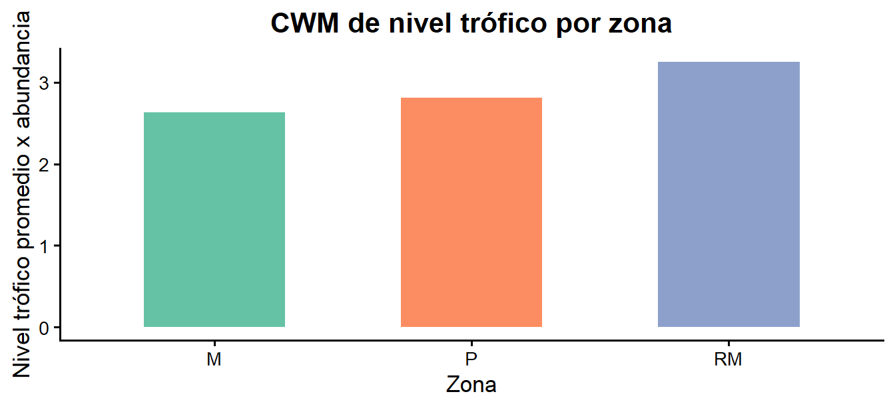
ImportanteCómo leer el CWM y por qué no es lo mismo que los índices de A1
Un CWM de nivel trófico más alto en RM no significa que sea más diversa: puede tener la misma FRic o menor. Dice que sus especies dominantes ocupan, en promedio, un nivel trófico más alto. En este sentido, las especies que más individuos aportan en RM tienden a estar más arriba en la cadena trófica (ej: más omnivory/invertivory - (tabla-cwm-zona?)) que las especies más abundantes en M. A1 describe la estructura del espacio funcional y CWM describe qué región de ese espacio concentra la abundancia, por lo que son lecturas complementarias.
En el estudio de caso, el CWM será la herramienta más directa para preguntas del tipo “¿qué estrategia funcional domina en cada tramo del gradiente?”, sin necesitar aún ninguna partición α-β-γ.
TipPara discutir en clase (10-15 min)
CWM-1. Según cwm_zona y la figura anterior, ¿qué zona presenta el CWM de nivel trófico más alto? ¿Qué estrategia trófica caracteriza, en promedio, a esa zona?
CWM-2. Compara esta tabla con el resumen de FRic por zona (sección A1, más arriba): ¿hay alguna zona con FRic relativamente bajo que aun así tenga un CWM claramente distinto a las demás? ¿Qué te dice eso sobre la diferencia entre “cuánta” diversidad funcional hay y “qué” domina en la comunidad?
Las preguntas CWM-3 y CWM-4 (más exigentes, incluyen cálculo adicional) se resuelven fuera de clase — ver Ejercicio 2 — CWM en la sección de práctica dirigida.
NotaPregunta ecológica de A1
La pregunta central es: ¿cómo se organiza la diversidad funcional dentro de cada comunidad, y qué rasgo domina esa organización?
A1 (con CWM) todavía no responde cuánto de la diversidad funcional regional corresponde a diferencias entre zonas. Esa pregunta se aborda en A2.
A2. Entropía cuadrática de Rao y partición α–β–γ
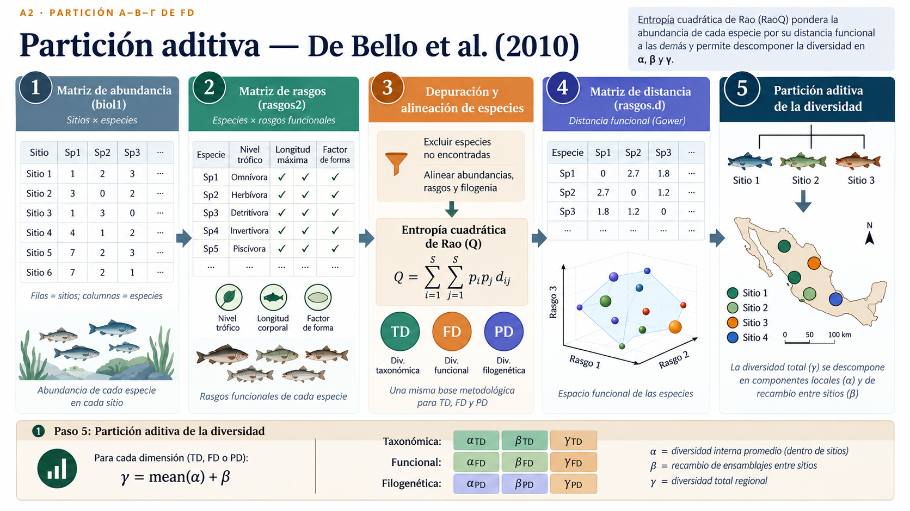
Partición multiescalar con Rao()

A2 cambia la pregunta: en lugar de describir cada sitio mediante varios índices, se busca descomponer la diversidad funcional en componentes alfa, beta y gamma mediante la entropía cuadrática de Rao (Rao, 1982).
Se muestran las dos formas clásicas de partición:
\[\gamma = \overline{\alpha} + \beta_{add}\]
y
\[\gamma = \overline{\alpha} \times \beta_{mult}\] donde, \(\gamma\) es la diversidad funcional total del conjunto de zonas (regional), \(\overline{\alpha}\) es la diversidad funcional promedio dentro de cada zona (alfa media), \(\beta_{add}\) es la diferenciación funcional entre zonas expresada como diferencia o el remanente de diversidad regional que no está contenido en la alfa media (\(\beta_{add} = \gamma - \overline{\alpha}\)). \(\beta_{mult}\) es esa misma diferenciación expresada como razón, es decir, cuántas veces la diversidad regional excede a la alfa media (\(\beta_{mult} = \gamma / \overline{\alpha}\)).
Diversidad funcional de zonas
Para este ejercicio, la unidad de comparación es la zona. Se suman las abundancias de los sitios pertenecientes a cada zona.
Código
biol_zona <-
biol1 %>%
rownames_to_column("Sites") %>% # Recupera el código de sitio como columna
left_join(zonas, by = "Sites") %>% # Añade la zona correspondiente a cada sitio
dplyr::select(-Sites) %>% # Retira el código de sitio
group_by(Zona) %>% # Agrupa por zona
summarise(across(everything(),
sum), .groups = "drop") %>% # Suma las abundancias dentro de cada zona
column_to_rownames("Zona") %>% # Usa la zona como nombre de fila
t() %>% # Transpone: las especies pasan a filas y las zonas a columnas
as.data.frame() # Convierte a data.frame (formato que exige Rao())
# Especies (filas) × zonas (columnas)
dim(biol_zona) # Confirma las dimensiones (87 especies x 3 zonas)[1] 87 3Código
# Muestra las primeras 5 especies
biol_zona[1:5, ] %>%
kbl(booktabs = F, longtable = FALSE, digits = 2) %>%
kable_classic(full_width = F, html_font = "Cambria") %>%
kableExtra::row_spec(0, bold = TRUE)| M | P | RM | |
|---|---|---|---|
| Hypanus sabinus | 0 | 0 | 10 |
| Elops saurus | 0 | 0 | 6 |
| Megalops atlanticus | 0 | 0 | 1 |
| Albula vulpes | 0 | 0 | 1 |
| Anguilla rostrata | 0 | 0 | 1 |
[1] 0[1] 0Ejecutar Rao()
Código
# Función Rao(), con las definiciones internas de Qdecomp() y disc()
source("Rao.R")
fd_zonas <-
Rao(
sample = biol_zona, # Matriz de abundancias (especies x zonas)
dfunc = rasgos.d, # Matriz de distancias funcionales (Gower)
dphyl = NULL, # Sin distancia filogenética (se incorpora en la Unidad IV)
weight = FALSE, # Definición original de Rao (sin ponderar por abundancia total)
Jost = FALSE # No aplica la corrección de Jost (números efectivos)
)Diversidad funcional multiescalar: α, β y γ
En lugar de dejar las salidas de Rao() como objetos aislados, se organizan los componentes principales en tablas para facilitar su lectura ecológica.
Código
rao_alpha <-
tibble(
Zona = names(fd_zonas$FD$Alpha), # Extrae el nombre de cada zona
Alfa_FD = as.numeric(fd_zonas$FD$Alpha) # Extrae la diversidad funcional alfa de cada zona
)
rao_particion <-
tibble(
Componente = c(
"Alfa media",
"Gamma",
"Beta aditiva",
"Beta multiplicativa"
),
Valor = c(
as.numeric(fd_zonas$FD$Mean_Alpha), # Alfa media entre las tres zonas
as.numeric(fd_zonas$FD$Gamma), # Diversidad funcional regional (gamma)
as.numeric(fd_zonas$FD$Beta_add), # Beta aditiva (gamma menos alfa media)
as.numeric(fd_zonas$FD$Gamma / fd_zonas$FD$Mean_Alpha) # Beta multiplicativa (gamma sobre alfa media)
)
)
rao_alpha %>%
kbl(
booktabs = TRUE, digits = 3, align = "c",
caption = "Diversidad funcional alfa por zona"
) %>%
kable_styling(
bootstrap_options = c("striped", "hover", "condensed"),
full_width = FALSE,
position = "center"
) %>%
row_spec(0, bold = TRUE,
color = "white",
background = "#2E4057") %>%
column_spec(1, bold = TRUE) # Resalta la columna de zona| Zona | Alfa_FD |
|---|---|
| M | 0.083 |
| P | 0.154 |
| RM | 0.219 |
Código
rao_particion %>%
kbl(
booktabs = TRUE,
digits = 3,
align = "c",
caption = "Partición regional de la diversidad funcional"
) %>%
kable_styling(
bootstrap_options = c("striped", "hover", "condensed"),
full_width = FALSE,
position = "center"
) %>%
row_spec(0, bold = TRUE,
color = "white",
background = "#2E4057") %>%
row_spec(3:4,
bold = TRUE,
background = "#FDF3E7") # Resalta las dos filas de beta (aditiva y multiplicativa)| Componente | Valor |
|---|---|
| Alfa media | 0.152 |
| Gamma | 0.175 |
| Beta aditiva | 0.023 |
| Beta multiplicativa | 1.151 |
Como ya se mencionó: La beta aditiva (\(\beta_{add}\)) se expresa mediante γ = α + βadd, mientras que la beta multiplicativa (\(\beta_{mult}\)) se obtiene mediante γ / α. El objeto Beta_prop de Rao() se conserva como medida proporcional para las comparaciones entre pares.
Código
beta_add_mat <-
as.matrix(fd_zonas$FD$Pairwise_samples$Beta_add) # Convierte la beta aditiva pareada a matriz
beta_prop_mat <-
as.matrix(fd_zonas$FD$Pairwise_samples$Beta_prop) # Convierte la beta proporcional pareada a matriz
pair_index <- tibble(
Comparacion = c("M_vs_P", "M_vs_RM", "P_vs_RM"), # Define el nombre de cada comparación
Zona_1 = c("M", "M", "P"), # Define la primera zona de cada par
Zona_2 = c("P", "RM", "RM") # Define la segunda zona de cada par
)
rao_beta_pares <- pair_index %>%
mutate(
Beta_add = map2_dbl(
Zona_1, Zona_2,
~ beta_add_mat[.y, .x] # Extrae la beta aditiva correspondiente a cada par
),
Beta_prop = map2_dbl(
Zona_1, Zona_2,
~ beta_prop_mat[.y, .x] # Extrae la beta proporcional correspondiente a cada par
)
) %>%
select(Comparacion, Beta_add, Beta_prop) # Conserva solo las columnas relevantes para la tabla
rao_beta_pares %>%
kbl(
booktabs = TRUE, digits = 3, align = "c",
caption = "Beta funcional entre pares de zonas (Rao, sin estandarizar)"
) %>%
kable_styling(
bootstrap_options = c("striped", "hover", "condensed"),
full_width = FALSE, position = "center"
) %>%
row_spec(0, bold = TRUE, color = "white", background = "#2E4057") %>%
row_spec(which.max(rao_beta_pares$Beta_prop), bold = TRUE, background = "#FDECEC") # Resalta el par más divergente| Comparacion | Beta_add | Beta_prop |
|---|---|---|
| M_vs_P | 0.002 | 1.597 |
| M_vs_RM | 0.028 | 15.756 |
| P_vs_RM | 0.021 | 10.313 |
La (rao-pares?) muestra que la diferenciación funcional no se acumula gradualmente de las zonas M hasta RM, sino que se concentra en RM, por sus diferentes combinaciones con otras zonas (M_vs_RM = 15.756, P_vs_RM = 10.313), coherente además, con el desplazamiento trófico de RM visto en el CWM.
La gran diferencia de escala entre Beta_add y Beta_prop se debe a que la alfa media es pequeña, así que un incremento absoluto modesto en gamma produce un cociente γ/ᾱ grande; conviene revisar rao_alpha antes de leer el 15.756 en términos intuitivos. Y como ya advierte el callout de esta sección, esta partición no corrige el desbalance muestral entre zonas (RM tiene solo 2 sitios frente a 24 y 16), el resultado debe confirmarse con las curvas estandarizadas por cobertura de B1 y B2.
NotaQué añade el bloque A2 respecto a A1
A1 entrega una descripción de la estructura funcional de cada sitio. A2 permite preguntar cuánto cambia la diversidad funcional (taxonómica y filogenética) entre unidades o zonas y cómo se relacionan en las escalas α, β y γ.
La partición de Rao utilizada aquí no corrige el desbalance de esfuerzo entre M, P y RM. Por ello, sus resultados observados son fundamentales para compararlos posteriormente con B1 y B2.
Comparación rápida entre TD y FD
Rao() puede calcular simultáneamente la diversidad taxonómica (TD) asociada a una distancia de identidad y la diversidad funcional cuando se proporciona dfunc.
Código
tabla_td_fd <- tibble(
Zona = names(fd_zonas$FD$Alpha), # Extrae el nombre de cada zona
Alfa_TD = as.numeric(fd_zonas$TD$Alpha), # Extrae la diversidad taxonómica alfa
Alfa_FD = as.numeric(fd_zonas$FD$Alpha) # Extrae la diversidad funcional alfa
)
tabla_td_fd %>%
kbl(
booktabs = TRUE, digits = 3, align = "c",
caption = "Comparación entre diversidad taxonómica (TD) y funcional (FD) por zona"
) %>%
kable_styling(
bootstrap_options = c("striped", "hover", "condensed"),
full_width = FALSE, position = "center"
) %>%
row_spec(0, bold = TRUE, color = "white", background = "#2E4057") %>%
column_spec(1, bold = TRUE)| Zona | Alfa_TD | Alfa_FD |
|---|---|---|
| M | 0.788 | 0.083 |
| P | 0.894 | 0.154 |
| RM | 0.935 | 0.219 |
TipPregunta de interpretación
Si la zona con mayor diversidad taxonómica no coincide con la de mayor diversidad funcional, se debe discutir qué puede estar indicando esa diferencia sobre la redundancia funcional y la composición de rasgos.
Mapa espacial de la diversidad alfa por sitio (TD y FD)
La comparación anterior es por zona (3 valoresde FD), pero también se puede mapear A2 por localidades o sitios, para las tres dimensiones de diversidad (TD, FD y PD). Aquí se reproduce con dos paneles en vez de tres, porque la dimensión filogenética (PD) todavía no se ha calculado. Para esto se necesita Rao() a escala de sitio, no de zona: se usa t(biol1) en lugar de biol_zona. Los circulos de la izquierda representan a las localidades de montaña (M) y los de la derecha a las de desembocadura (RM).
Código
fd_sitios_rao <-
Rao(
sample = t(biol1), # Especies (filas) x sitios (columnas) — escala de sitio.
dfunc = rasgos.d, # Matriz de distancias funcionales (Gower)
dphyl = NULL, # Sin distancia filogenética (se incorpora en la Unidad IV)
weight = FALSE, # Usa la definición original de Rao
Jost = FALSE # No aplica la corrección de Jost
)
par(
mfrow = c(1, 2), # Un panel para TD y otro para FD, uno al lado del otro
mar = c(4.5, 4.5, 3, 1),
cex.axis = 0.8, cex.lab = 1.1, cex.main = 1
)
plot(coord, asp = 1, pch = 21,
col = "white", bg = "brown",
cex = escalar_cex(fd_sitios_rao$TD$Alpha), # Reutiliza la misma función de escala automática de A1
main = "Diversidad taxonómica (TD)",
xlab = "Longitud", ylab = "Latitud")
lines(coord, col = "light blue")
plot(coord, asp = 1, pch = 21,
col = "white", bg = "brown",
cex = escalar_cex(fd_sitios_rao$FD$Alpha),
main = "Diversidad funcional (FD)",
xlab = "Longitud", ylab = "Latitud")
lines(coord, col = "light blue")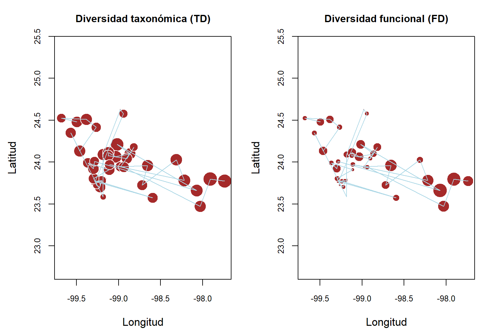
NotaLectura del mapeo
Un sitio con un círculo grande en TD pero pequeño en FD (o viceversa) es exactamente el tipo de discrepancia que señala redundancia o divergencia funcional a escala local, con la misma pregunta de la tabla anterior, pero ahora visible sitio por sitio en vez de promediada por zona. Cuando se incorpore PD, este mismo bloque de código se extiende agregando un tercer panel con fd_sitios_rao$PD$Alpha, sin cambiar nada más.
B1. Números efectivos de Hill para diversidad funcional alfa
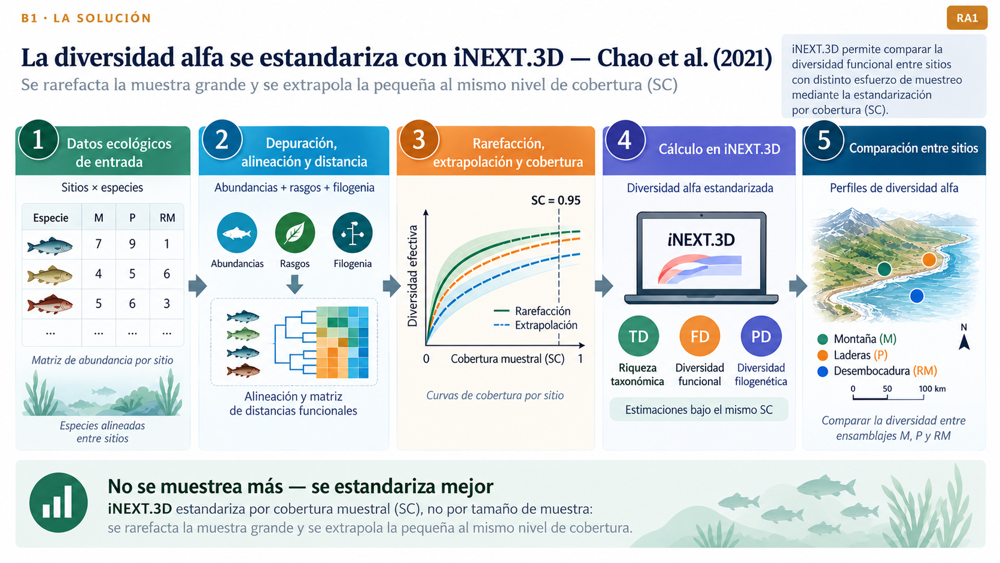
Diversidad funcional alfa con iNEXT3D()
B1 introduce una idea diferente: la diversidad funcional puede expresarse mediante números efectivos de Hill, evaluados para diferentes órdenes de diversidad:
- q = 0: representa la riqueza funcional efectiva; las entidades contribuyen independientemente de su abundancia.
- q = 1: corresponde al número efectivo asociado a la entropía de Shannon; las abundancias reciben un peso proporcional.
- q = 2: aumenta el peso relativo de las entidades dominantes.
En iNEXT3D(), la diversidad funcional se calcula proporcionando una matriz de distancias entre especies mediante FDdistM; con FDtype = "AUC" se integra el perfil de umbrales funcionales para obtener una medida global (Chao et al., 2021).
Información básica de FD y cobertura observada
Código
fd_alpha_inext <-
iNEXT3D(
data = biol_zona, # Matriz de abundancias (especies x zonas)
diversity = "FD", # Dimensión funcional
q = c(0, 1, 2), # Órdenes de diversidad a estimar
datatype = "abundance", # Tipo de dato: abundancias
knots = 20, # Número de puntos de la curva de rarefacción/extrapolación
nboot = 5, # Número de remuestreos bootstrap (bajo, para uso en clase)
FDdistM = as.matrix(rasgos.d), # Matriz de distancias funcionales
FDtype = "AUC", # Método de área bajo la curva
FDcut_number = 15 # Número de umbrales de distancia considerados
)
# Tabulación de iNEXT.3D
fd_alpha_inext$FDInfo %>%
kbl(
booktabs = TRUE,
digits = 3,
align = "c",
caption = "Información muestral por zona: tamaño de muestra (n), riqueza observada (S.obs) y cobertura muestral (SC), con valores mínimos y máximos de las distancias funcionales entre las especies por cada zona"
) %>%
kable_styling(
bootstrap_options = c("striped", "hover", "condensed"),
full_width = FALSE,
position = "center"
) %>%
row_spec(0, bold = TRUE,
color = "white",
background = "#2E4057") %>%
scroll_box(width = "100%") # Habilita desplazamiento horizontal si la tabla no cabe en pantalla| Assemblage | n | S.obs | SC(n) | SC(2n) | dmin | dmean | dmax |
|---|---|---|---|---|---|---|---|
| M | 13166 | 30 | 1.000 | 1.000 | 0 | 0.083 | 0.623 |
| P | 5151 | 30 | 0.999 | 1.000 | 0 | 0.154 | 0.638 |
| RM | 414 | 53 | 0.961 | 0.988 | 0 | 0.219 | 0.808 |
NotaParámetros de demostración
En este taller se utiliza nboot = 5 y FDcut_number = 15 para reducir el tiempo de cálculo durante la práctica. Para un análisis final se recomienda evaluar un número mayor de réplicas bootstrap y una discretización más fina del intervalo de tau cuando la precisión de la estimación sea más formal o relevante.
ImportantePor qué B1 es distinto de A2
A2 calcula la diversidad funcional observada y la particiona en α–β–γ.
B1 utiliza la lógica de rarefacción/extrapolación de iNEXT3D() para estudiar cómo cambia la diversidad funcional alfa al modificar el tamaño de muestra o la cobertura. Permitiendo hacer comparativas muestras de diferentes tamaños. La función produce resultados basados tanto en tamaño de muestra como en cobertura y permite representar curvas para q = 0, 1 y 2 (Chao et al., 2021).
Curvas de rarefacción/extrapolación por tamaño de muestra
Código
fig_b1_size <-
ggiNEXT3D(
fd_alpha_inext, # Resultado de iNEXT3D()
type = 1, # Curvas basadas en tamaño de muestra
facet.var = "Assemblage", # Un panel por zona
color.var = "Order.q" # Colorea por orden de diversidad q
) +
labs(
title = "Curvas basadas en el tamaño de las muestras",
x = "Tamaño de muestra",
y = "Diversidad funcional (FD_AUC)",
color = "Orden q",
fill = "Orden q"
)
fig_b1_size # Muestra el gráfico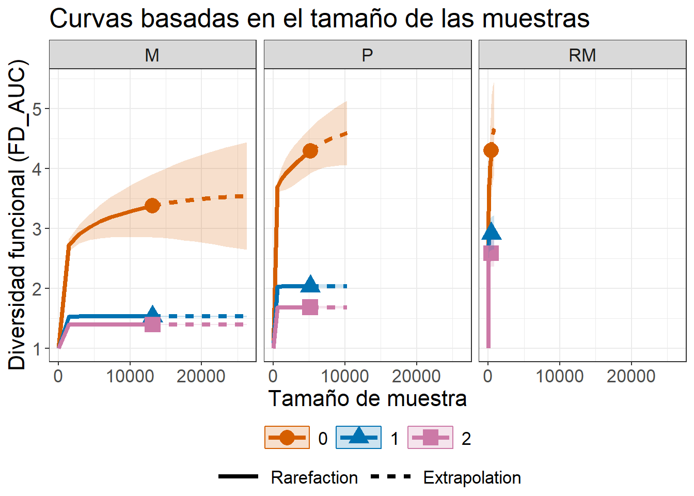
Lectura: las curvas permiten evaluar cuánto cambia la estimación de FD alfa al aumentar el tamaño de muestra. La parte continua corresponde a rarefacción y la parte extrapolada extiende la estimación más allá del esfuerzo observado.
Curvas de cobertura
Código
fig_b1_coverage <-
ggiNEXT3D(
fd_alpha_inext,
type = 3, # Curvas basadas en cobertura de la muestra
facet.var = "Order.q" # Un panel por orden de diversidad q
) +
labs(
title = "Curvas basadas en la cobertura de las muestras",
x = "Cobertura de la muestra",
y = "Diversidad funcional (FD_AUC)",
color = "Zona",
fill = "Zona"
)
fig_b1_coverage # Muestra el gráfico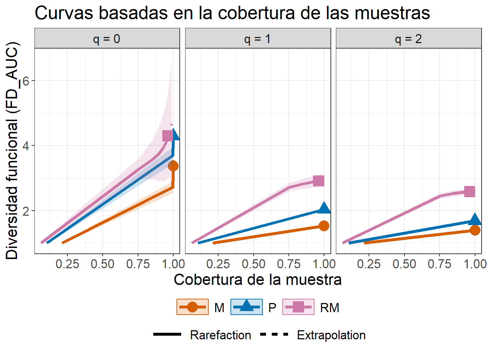
La documentación de ggiNEXT3D() define type = 1 como curvas basadas en tamaño de muestra, type = 2 como curvas de completitud y type = 3 como curvas basadas en cobertura (Chao et al., 2021).
Comparar las zonas a una cobertura común
Para una comparación directa de diversidad alfa, se puede seleccionar una cobertura común. estimate3D() permite calcular los números efectivos de Hill para q = 0, 1 y 2 en un nivel específico de cobertura; cuando no se especifica level, utiliza la cobertura mínima entre las muestras como referencia (Chao et al., 2021).
Código
nivel_cobertura <-
min(
as.numeric(fd_alpha_inext$FDInfo$`SC(n)`), # Extrae la cobertura observada de cada zona
na.rm = TRUE # Ignora los valores ausentes, si los hubiera
) # Toma la cobertura más baja como nivel de referencia común
nivel_cobertura # Muestra el nivel de cobertura seleccionado[1] 0.96145760,9614576 es la cobertura común que se usa para comparar a las tres zonas o ensamblajes, a pesar de presentar diferentes tamaños de muestra o número de sitios (realiza una estandarización).
Código
fd_alpha_cobertura <-
estimate3D(
data = biol_zona, # Matriz de abundancias (especies x zonas)
diversity = "FD", # Dimensión funcional
q = c(0, 1, 2), # Órdenes de diversidad a estimar
datatype = "abundance", # Tipo de dato: abundancias
base = "coverage", # Estandariza por cobertura muestral
level = nivel_cobertura, # Fija el nivel de cobertura común entre zonas
nboot = 5, # Número de remuestreos bootstrap
FDdistM = as.matrix(rasgos.d), # Matriz de distancias funcionales
FDtype = "AUC", # Método de área bajo la curva
FDcut_number = 15 # Número de umbrales de distancia considerados
)
fd_alpha_cobertura %>%
kbl(
booktabs = TRUE,
digits = 3,
align = "c",
caption = "Diversidad funcional alfa estimada a cobertura común"
) %>%
kable_styling(
bootstrap_options = c("striped", "hover", "condensed"),
full_width = FALSE,
position = "center"
) %>%
row_spec(0, bold = TRUE,
color = "white",
background = "#2E4057") %>%
column_spec(1, bold = TRUE) %>%
scroll_box(width = "100%") # Habilita desplazamiento horizontal si la tabla no cabe en pantalla| Assemblage | Order.q | SC | m | Method | qFD | s.e. | qFD.LCL | qFD.UCL |
|---|---|---|---|---|---|---|---|---|
| M | 0 | 0.961 | 74.426 | Rarefaction | 1.946 | 0.023 | 1.900 | 1.992 |
| M | 1 | 0.961 | 74.426 | Rarefaction | 1.507 | 0.011 | 1.485 | 1.529 |
| M | 2 | 0.961 | 74.426 | Rarefaction | 1.388 | 0.010 | 1.370 | 1.407 |
| P | 0 | 0.961 | 110.723 | Rarefaction | 3.164 | 0.059 | 3.049 | 3.279 |
| P | 1 | 0.961 | 110.723 | Rarefaction | 1.993 | 0.009 | 1.976 | 2.011 |
| P | 2 | 0.961 | 110.723 | Rarefaction | 1.672 | 0.008 | 1.655 | 1.688 |
| RM | 0 | 0.961 | 414.000 | Observed | 4.299 | 0.674 | 2.979 | 5.619 |
| RM | 1 | 0.961 | 414.000 | Observed | 2.912 | 0.065 | 2.785 | 3.040 |
| RM | 2 | 0.961 | 414.000 | Observed | 2.585 | 0.064 | 2.459 | 2.711 |
NotaLectura de B1
La comparación a cobertura común evita interpretar como diferencia ecológica una diferencia que puede deberse a que una zona fue muestreada con mayor o menor completitud (cobertura muestral).
El objetivo no es sustituir A1 o A2, sino añadir una capa de estandarización del proceso de muestreo.
B2. Números efectivos de Hill para diversidad funcional beta
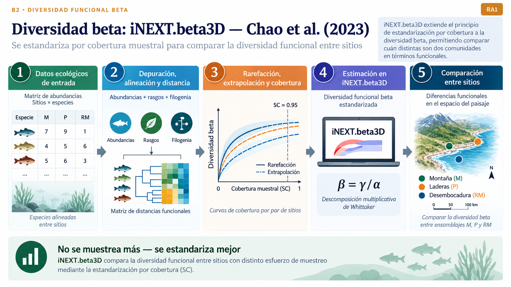
Diversidad funcional beta con iNEXTbeta3D()
El bloque B2 extiende la lógica de B1 hacia la diversidad beta. iNEXTbeta3D() permite calcular diversidad gamma, alfa y beta estandarizada mediante cobertura común, además de varios índices de disimilitud. Para FD se proporciona la matriz de distancias funcionales mediante FDdistM (Chao et al., 2023).
Construir los pares de zonas
Código
zonas_id <- c("M", "P", "RM") # Define el orden de las zonas a comparar
nombres_pares <- combn(
zonas_id,
2, # Genera todas las combinaciones posibles de a pares
FUN = \(p) paste(p, collapse = "_vs_") # Construye el nombre de cada comparación
)
biol_FD_beta <- combn(zonas_id, 2, simplify = FALSE) %>% # Genera la lista de pares de zonas
set_names(nombres_pares) %>% # Asigna el nombre de cada par a la lista
map(\(p) biol_zona[, p, drop = FALSE]) # Extrae las dos columnas correspondientes a cada par
names(biol_FD_beta) # Muestra los nombres de los tres pares generados[1] "M_vs_P" "M_vs_RM" "P_vs_RM"Chequeos de consistencia
Código
biol.dist.beta <- as.matrix(rasgos.d) # Convierte la distancia de Gower en matriz cuadrada
stopifnot(is.matrix(biol.dist.beta)) # Verifica que sea una matriz
stopifnot(isSymmetric(biol.dist.beta)) # Verifica la simetría de las distancias
stopifnot(identical(rownames(biol.dist.beta),
colnames(biol.dist.beta))) # Verifica coherencia de nombres
stopifnot(
all(
map_lgl(
biol_FD_beta,
\(m) identical(rownames(m),
rownames(biol.dist.beta)) # Verifica que cada par comparta el mismo orden de especies
)
)
)Ejecutar iNEXTbeta3D()
Código
fd_beta_cobertura <-
iNEXTbeta3D(
data = biol_FD_beta, # Lista de pares de zonas a comparar
diversity = "FD", # Dimensión funcional
q = c(0, 1, 2), # Órdenes de diversidad a estimar
datatype = "abundance", # Tipo de dato: abundancias
base = "coverage", # Estandariza por cobertura muestral
nboot = 5, # Número de remuestreos bootstrap
FDdistM = biol.dist.beta, # Matriz de distancias funcionales
FDtype = "AUC", # Método de área bajo la curva
FDcut_number = 15 # Número de umbrales de distancia considerados
)
# Impresión de la tabla con los datos
head(fd_beta_cobertura$M_vs_P$beta) %>%
kbl(booktabs = F, longtable = FALSE, digits = 2) %>%
kable_classic(full_width = F, html_font = "Cambria") %>%
kableExtra::row_spec(0, bold = TRUE)| Dataset | Order.q | SC | Size | Beta | Method | s.e. | LCL | UCL | Diversity |
|---|---|---|---|---|---|---|---|---|---|
| M_vs_P | 0 | 0.50 | 7.25 | 1.14 | Rarefaction | 0 | 1.13 | 1.14 | FD_AUC |
| M_vs_P | 0 | 0.52 | 8.02 | 1.12 | Rarefaction | 0 | 1.12 | 1.12 | FD_AUC |
| M_vs_P | 0 | 0.55 | 8.90 | 1.11 | Rarefaction | 0 | 1.10 | 1.11 | FD_AUC |
| M_vs_P | 0 | 0.58 | 9.90 | 1.09 | Rarefaction | 0 | 1.09 | 1.10 | FD_AUC |
| M_vs_P | 0 | 0.60 | 11.03 | 1.08 | Rarefaction | 0 | 1.08 | 1.08 | FD_AUC |
| M_vs_P | 0 | 0.62 | 12.34 | 1.07 | Rarefaction | 0 | 1.07 | 1.07 | FD_AUC |
NotaParámetros de demostración en B2
Al igual que en B1, nboot = 5 y FDcut_number = 15 se utilizan aquí para mantener el ejercicio ágil. En un análisis definitivo conviene aumentar ambos valores según la precisión requerida y el tiempo de cómputo disponible.
iNEXTbeta3D() permite además especificar niveles particulares de cobertura mediante level; por defecto, con base = "coverage", genera estimaciones estandarizadas a lo largo de un rango de coberturas apropiado para las muestras analizadas (Chao et al., 2023).
Curvas de gamma, alfa y beta
Código
ggiNEXTbeta3D(
fd_beta_cobertura, # Resultado de iNEXTbeta3D()
type = "B" # Curvas de gamma, alfa y beta bajo estandarización por cobertura
) +
labs(
x = "Cobertura de la muestra",
y = "Diversidad funcional (FD_AUC)",
color = "Comparación",
fill = "Comparación",
shape = "Comparación",
linetype = "Tipo de curva"
) +
theme(axis.text.x = element_text(angle = 45,
hjust = 1)) # Rota las etiquetas del eje x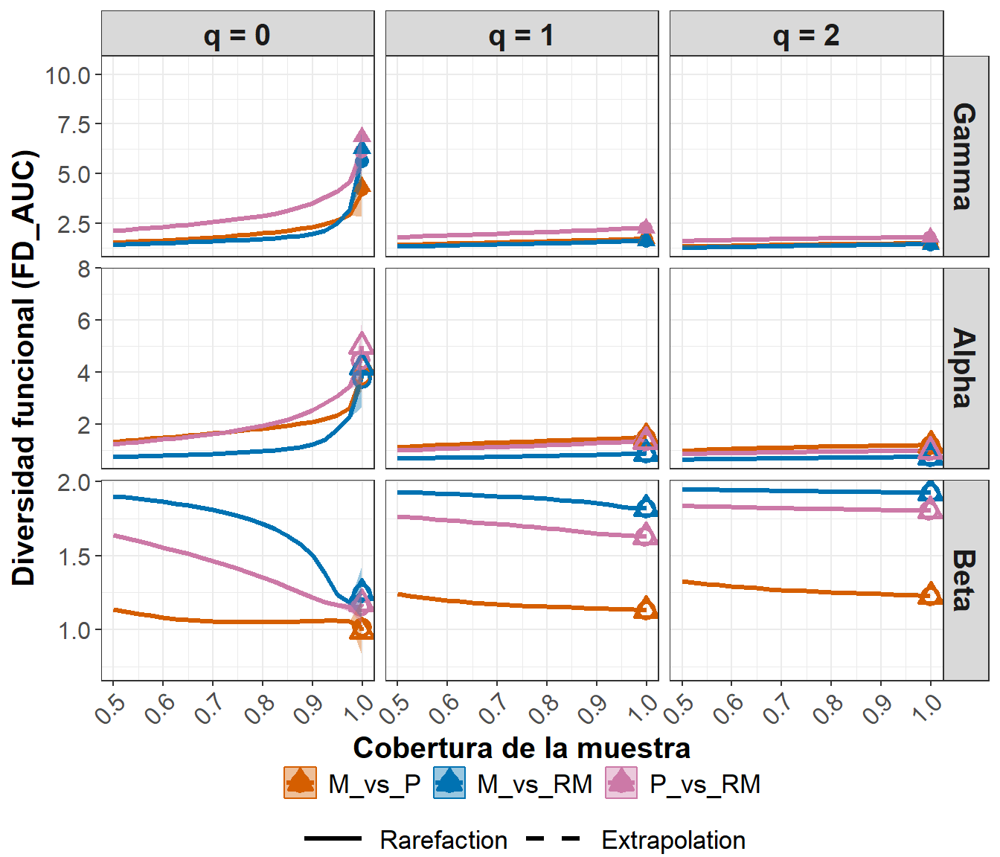
La función ggiNEXTbeta3D() utiliza type = "B" para representar las curvas de gamma, alfa y beta bajo estandarización por cobertura. También permite type = "D" para los cuatro índices de disimilitud (Chao et al., 2023).
La estandarización por cobertura confirma el patrón encontrado con Rao, pero con un matiz importante: en q = 0 (que pesa por igual todas las especies, incluidas las raras), la d. beta de M_vs_RM parte muy alta a coberturas bajas (~1.9) pero cae abruptamente y converge con las demás comparaciones cerca de cobertura = 1.0, mientras que P_vs_RM se mantiene relativamente alta y M_vs_P permanece baja durante todo el rango — es decir, buena parte de la enorme diferenciación observada en q = 0 para M_vs_RM depende de qué tan completo esté el muestreo, justo la sospecha que quedó pendiente al ver que RM tiene la cobertura y el tamaño de muestra más bajos.
Sin embargo, en q = 1 y q = 2 (que dan más peso a las especies dominantes) el orden se mantiene estable y prácticamente plano en todo el rango de cobertura: M_vs_RM siempre por encima de P_vs_RM, y ambas muy por encima de M_vs_P. Esto separa dos conclusiones distintas: la diferenciación funcional entre M/P y RM basada en la composición dominante (q = 1, q = 2) es un patrón robusto y no un artefacto de muestreo, mientras que la magnitud extrema encontrada antes en q = 0 (equivalente a la beta no estandarizada de Rao) sí estaba inflada por la incompletitud del muestreo en RM.
Extraer las tres comparaciones beta a cobertura común
Para evitar seleccionar visualmente un punto de una curva, se puede solicitar un nivel específico de cobertura. Se toma como referencia una cobertura común conservadora entre los tres pares, de modo que M–P, M–RM y P–RM puedan compararse bajo el mismo nivel de completitud muestral (para este caso = 0,5).
Código
coberturas_beta <- map_dfr(
fd_beta_cobertura,
~ .x$beta %>%
select(Dataset, Order.q, SC) # Conserva solo la comparación, el orden q y la cobertura
) %>%
summarise(
nivel_comun = min(SC, na.rm = TRUE) # Toma la cobertura mínima entre todas las comparaciones
)
nivel_beta_comun <- coberturas_beta$nivel_comun # Guarda el nivel común como un único valor
nivel_beta_comun # Muestra el nivel de cobertura seleccionado[1] 0.5Código
fd_beta_comun <-
iNEXTbeta3D(
data = biol_FD_beta,
diversity = "FD",
q = c(0, 1, 2),
datatype = "abundance",
base = "coverage",
level = nivel_beta_comun, # Fija el nivel de cobertura común calculado antes
nboot = 5,
FDdistM = biol.dist.beta,
FDtype = "AUC",
FDcut_number = 15
)
fd_beta_comun_tabla <- map_dfr(
names(fd_beta_comun),
~ fd_beta_comun[[.x]]$beta %>%
mutate(Comparacion = .x, .before = 1) %>% # Añade el nombre de la comparación como primera columna
select(Comparacion, Order.q, SC, Size, Beta, Method, s.e., LCL, UCL, Diversity) # Conserva las columnas clave
)
fd_beta_comun_tabla %>%
kbl(
booktabs = TRUE,
digits = 3,
align = "c",
caption = "Beta funcional estimada a cobertura común (0,5 o 50%)"
) %>%
kable_styling(
bootstrap_options = c("striped", "hover", "condensed"),
full_width = FALSE,
position = "center",
font_size = 13
) %>%
row_spec(0, bold = TRUE,
color = "white",
background = "#2E4057") %>%
add_header_above(c(" " = 4,
"Estimación" = 2,
" " = 1, "Intervalo de confianza" = 2,
" " = 1)) %>%
scroll_box(width = "100%") # Habilita desplazamiento horizontal (la tabla tiene muchas columnas)| Comparacion | Order.q | SC | Size | Beta | Method | s.e. | LCL | UCL | Diversity |
|---|---|---|---|---|---|---|---|---|---|
| M_vs_P | 0 | 0.5 | 7.254 | 1.136 | Rarefaction | 0.002 | 1.132 | 1.139 | FD_AUC |
| M_vs_P | 1 | 0.5 | 7.254 | 1.239 | Rarefaction | 0.002 | 1.236 | 1.243 | FD_AUC |
| M_vs_P | 2 | 0.5 | 7.254 | 1.328 | Rarefaction | 0.002 | 1.324 | 1.332 | FD_AUC |
| M_vs_RM | 0 | 0.5 | 3.608 | 1.903 | Rarefaction | 0.003 | 1.898 | 1.908 | FD_AUC |
| M_vs_RM | 1 | 0.5 | 3.608 | 1.932 | Rarefaction | 0.002 | 1.929 | 1.936 | FD_AUC |
| M_vs_RM | 2 | 0.5 | 3.608 | 1.951 | Rarefaction | 0.001 | 1.948 | 1.953 | FD_AUC |
| P_vs_RM | 0 | 0.5 | 8.611 | 1.638 | Rarefaction | 0.002 | 1.633 | 1.643 | FD_AUC |
| P_vs_RM | 1 | 0.5 | 8.611 | 1.767 | Rarefaction | 0.002 | 1.763 | 1.772 | FD_AUC |
| P_vs_RM | 2 | 0.5 | 8.611 | 1.838 | Rarefaction | 0.002 | 1.834 | 1.842 | FD_AUC |
ImportanteQué aporta B2
A2 permite calcular la diversidad beta funcional a partir de la partición de Rao con los datos observados.
B2 permite preguntar cómo se comporta esa diversidad beta funcional cuando las comunidades se comparan a una cobertura muestral común. Esto resulta especialmente importante cuando el esfuerzo de muestreo es muy diferente entre las unidades comparadas, como sucede aquí entre zonas.
Integración A1 → A2 → B1 → B2
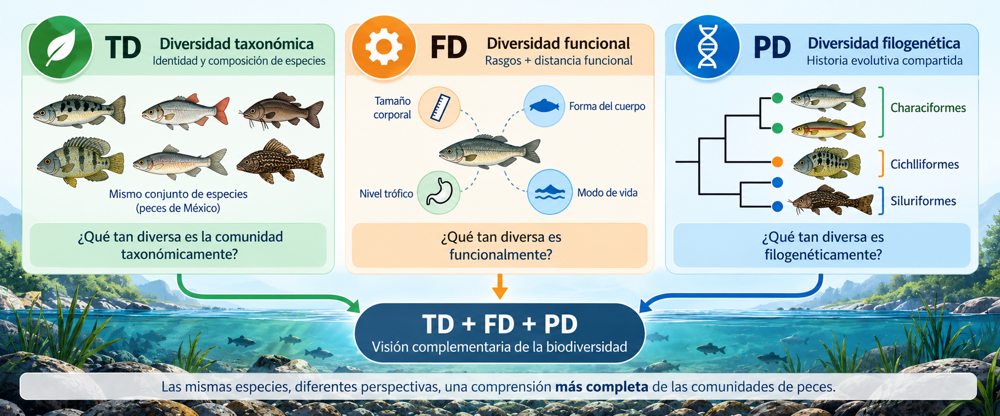
Cuatro preguntas, cuatro herramientas
| Bloque | Pregunta principal | Escala | Herramienta |
|---|---|---|---|
| A1 | ¿Cómo se organiza el espacio funcional dentro de cada comunidad? | Principalmente α | dbFD() |
| A2 | ¿Cómo se reparte la FD entre α, β y γ? | α–β–γ | Rao() |
| B1 | ¿Cuál es la FD alfa en números efectivos y cómo cambia con la cobertura? | α | iNEXT3D() / estimate3D() |
| B2 | ¿Cuál es la FD beta cuando las comunidades se comparan con igual cobertura? | β y γ | iNEXTbeta3D() |
NotaRegla de lectura
A1 y A2 describen la diversidad funcional observada y su estructura.
B1 y B2 añaden rarefacción/extrapolación y cobertura muestral.
Por tanto, B1/B2 no son simplemente versiones nuevas de A1/A2: responden preguntas relacionadas, pero incorporan explícitamente la completitud del muestreo.
Comparar bloques A2 y B2 (FD multiescalar)
Código
beta_rao <-
tibble(
Comparacion = nombres_pares, # Reutiliza los nombres de par ya creados en B2
Beta_prop_Rao = as.numeric(fd_zonas$FD$Pairwise_samples$Beta_prop) # Extrae la beta proporcional de A2 (Rao)
)
beta_rao %>%
kbl(
booktabs = TRUE,
digits = 2,
align = "c",
caption = "A2: Beta funcional según Rao (A2), sin estandarizar por cobertura"
) %>%
kable_styling(
bootstrap_options = c("striped", "hover", "condensed"),
full_width = FALSE,
position = "center"
) %>%
row_spec(0, bold = TRUE,
color = "white",
background = "#2E4057")| Comparacion | Beta_prop_Rao |
|---|---|
| M_vs_P | 1.60 |
| M_vs_RM | 15.76 |
| P_vs_RM | 10.31 |
Código
fd_beta_comun_tabla %>%
kbl(
booktabs = TRUE,
digits = 3,
align = "c",
caption = "B2: Beta funcional estimada a cobertura común (0,5 o 50%)"
) %>%
kable_styling(
bootstrap_options = c("striped", "hover", "condensed"),
full_width = FALSE,
position = "center",
font_size = 13
) %>%
row_spec(0, bold = TRUE,
color = "white",
background = "#2E4057") %>%
add_header_above(c(" " = 4,
"Estimación" = 2,
" " = 1, "Intervalo de confianza" = 2,
" " = 1)) %>%
scroll_box(width = "100%") # Habilita desplazamiento horizontal (la tabla tiene muchas columnas)| Comparacion | Order.q | SC | Size | Beta | Method | s.e. | LCL | UCL | Diversity |
|---|---|---|---|---|---|---|---|---|---|
| M_vs_P | 0 | 0.5 | 7.254 | 1.136 | Rarefaction | 0.002 | 1.132 | 1.139 | FD_AUC |
| M_vs_P | 1 | 0.5 | 7.254 | 1.239 | Rarefaction | 0.002 | 1.236 | 1.243 | FD_AUC |
| M_vs_P | 2 | 0.5 | 7.254 | 1.328 | Rarefaction | 0.002 | 1.324 | 1.332 | FD_AUC |
| M_vs_RM | 0 | 0.5 | 3.608 | 1.903 | Rarefaction | 0.003 | 1.898 | 1.908 | FD_AUC |
| M_vs_RM | 1 | 0.5 | 3.608 | 1.932 | Rarefaction | 0.002 | 1.929 | 1.936 | FD_AUC |
| M_vs_RM | 2 | 0.5 | 3.608 | 1.951 | Rarefaction | 0.001 | 1.948 | 1.953 | FD_AUC |
| P_vs_RM | 0 | 0.5 | 8.611 | 1.638 | Rarefaction | 0.002 | 1.633 | 1.643 | FD_AUC |
| P_vs_RM | 1 | 0.5 | 8.611 | 1.767 | Rarefaction | 0.002 | 1.763 | 1.772 | FD_AUC |
| P_vs_RM | 2 | 0.5 | 8.611 | 1.838 | Rarefaction | 0.002 | 1.834 | 1.842 | FD_AUC |
TipPreguntas para la discusión
- ¿En qué comparación se observa el mayor efecto potencial del desbalance de esfuerzo de muestreo?
- ¿Las conclusiones de A2 y B2 coinciden en el orden relativo de las comparaciones?
- ¿Qué cambia al pasar de los datos observados a una comparación basada en cobertura común?
- ¿En qué circunstancias sería razonable utilizar directamente la partición de Rao sin estandarización por cobertura?
Ejercicios de práctica dirigida (individual)
Con los objetos construidos en las secciones anteriores se desarrollan los siguientes ejercicios.
Ejercicio 1 — Bloque A1
Seleccionar uno de los índices de dbFD() y explicar por qué una diferencia entre zonas no debe interpretarse automáticamente como una diferencia general de “diversidad funcional”. Relacionar el resultado con la propiedad funcional específica que mide el índice.
Ejercicio 2 — Cálculo de CWM
CWM-3. Calcular el CWM de al menos dos rasgos binarios de dieta adicionales (por ejemplo omnivory_1 e invertivory_1 — revisa colnames(cwm_sitio) para confirmar los nombres exactos) por zona, a partir de cwm_sitio/cwm_zona ya construidos, y explicar en una frase qué estrategia trófica domina cada zona.
CWM-4. La zona RM presenta uno de los valores más altos de CWM de TrophicLevel, pero no necesariamente el mayor FDis (ver la tabla de A1 más arriba). ¿Hay una contradicción? Justificar la respuesta distinguiendo explícitamente entre “estructura del espacio funcional” (lo que mide A1) y “composición funcional dominante” (lo que mide el CWM).
Ejercicio 3 — Bloque A2
Repetir la partición de Rao con weight = TRUE y comparar Beta_prop con la configuración weight = FALSE.
Código
fd_zonas_weight <-
Rao(
sample = biol_zona,
dfunc = rasgos.d,
dphyl = NULL,
weight = TRUE, # Corrección de Villéger y Mouillot (2008), ponderada por abundancia
Jost = FALSE
)Explicar qué cambia conceptualmente al incorporar la corrección ponderada por abundancia.
Ejercicio 4 — B1
Comparar los tres órdenes de diversidad (q = 0, q = 1, q = 2) y describir cuál de las zonas presenta mayor diversidad funcional alfa a la cobertura común seleccionada.
Ejercicio 5 — B2
Identificar qué comparación entre zonas presenta mayor diversidad beta funcional para cada orden q y discutir si el patrón cambia al pasar de q = 0 a q = 2.
Ejercicio 6 — A2 vs B2
Comparar una medida de beta funcional obtenida con Rao() frente a la estimación de iNEXTbeta3D() a cobertura común. Explicar por qué ambos valores no tienen necesariamente que coincidir.
Ejercicio 7 — Transferencia al estudio de caso
Definir:
- las unidades que se compararán;
- la matriz de abundancias o incidencias;
- los rasgos funcionales;
- la distancia funcional;
- la escala de comparación (α, β, γ);
- y el nivel de cobertura que sería defendible para las comparaciones.
Conexión con TD, FD y PD
La misma arquitectura puede reutilizarse cuando se incorpore la dimensión filogenética:
| Dimensión | Ejemplo de insumo | Pregunta |
|---|---|---|
| TD | Identidad/composición de especies | ¿Qué tan diversa es la comunidad taxonómicamente? |
| FD | Rasgos + distancia funcional | ¿Qué tan diversa es funcionalmente? |
| PD | Árbol filogenético | ¿Qué tan diversa es filogenéticamente? |
Y en cualquiera de las tres dimensiones se puede estudiar la escala:
\[\text{α} \rightarrow \text{β} \rightarrow \text{γ}\]
Por ello, multidimensionalidad y multiescalaridad no son conceptos opuestos:
- Multidimensionalidad: TD, FD y PD.
- Multiescalaridad: α, β y γ.
- A1–A2–B1–B2: diferentes enfoques para cuantificar y comparar esas dimensiones y escalas.
NotaProyección hacia la Unidad IV
La estructura metodológica del taller se puede mantener al pasar de FD a PD: se sustituye la distancia funcional por la información filogenética correspondiente y se conserva la lógica de A1 → A2 → B1 → B2 cuando sea metodológicamente pertinente.
Anticipando el estudio de caso

Se recomienda dejar definida una primera versión del diseño analítico:
- Unidades de comparación: sitios, zonas, tramos, tratamientos o tipos de hábitat.
- Dimensión: TD, FD o PD.
- Escala: α, β o γ.
- Estandarización: tamaño de muestra o cobertura, según la pregunta.
- Rasgos y distancia: definición biológicamente justificada y reproducible.
- Método: A1, A2, B1 o B2 según la pregunta concreta.
TipSobre el manuscrito ANVIDEA
El manuscrito ANVIDEA se encuentra actualmente en proceso de publicación. Para este curso se puede mencionar como trabajo de referencia que posteriormente servirá de guía, pero los materiales docentes no requieren reproducir ni divulgar información interna del manuscrito.
Lecturas de referencia
Boersma, K. S., Dee, L. E., Miller, S. J., Bogan, M. T., Lytle, D. A.,
and Gitelman, A. I. (2016). Linking multidimensional functional
diversity to quantitative methods: A graphical hypothesis-evaluation
framework. Ecology, 97(3), 583–593.
Chao, A., Henderson, P. A., Chiu, C.-H., Moyes, F., Hu, K.-H., Dornelas,
M., and Magurran, A. E. (2021). Measuring temporal change in alpha
diversity: A framework integrating taxonomic, phylogenetic and
functional diversity and the iNEXT. 3D standardization. Methods in
Ecology and Evolution, 12(10), 1926–1940.
Chao, A., Thorn, S., Chiu, C.-H., Moyes, F., Hu,
K.-H., Chazdon, R. L., Wu, J., Magnago, L. F. S., Dornelas, M., Zelenỳ,
D., et al. (2023). Rarefaction and extrapolation with beta
diversity under a framework of h ill numbers: The iNEXT. beta3D
standardization. Ecological Monographs, 93(4), e1588.
Lavorel, S., Grigulis, K., McIntyre, S., Williams, N. S., Garden, D.,
Dorrough, J., Berman, S., Quétier, F., Thébault, A., and Bonis, A.
(2008). Assessing functional diversity in the field–methodology matters!
Functional Ecology, 22(1), 134–147.
Mouillot, D., Graham, N. A. J., Villéger, S., Mason, N. W. H., and
Bellwood, D. R. (2013). A functional approach reveals community
responses to disturbances. Trends in Ecology & Evolution,
28(3), 167–177.
Rao, C. R. (1982). Diversity and dissimilarity coefficients: A unified
approach. Theoretical Population Biology, 21(1),
24–43.
Tette-Pomárico, A. J., Romero Borja, I. M., and García-Urueña, R.
(2026). Beyond taxonomy: Functional diversity reveals hidden impacts of
urban wastewater on marine-coastal zooplankton. Marine Environmental
Research.
Villéger, S., Mason, N. W., and Mouillot, D. (2008). New
multidimensional functional diversity indices for a multifaceted
framework in functional ecology. Ecology, 89(8),
2290–2301.